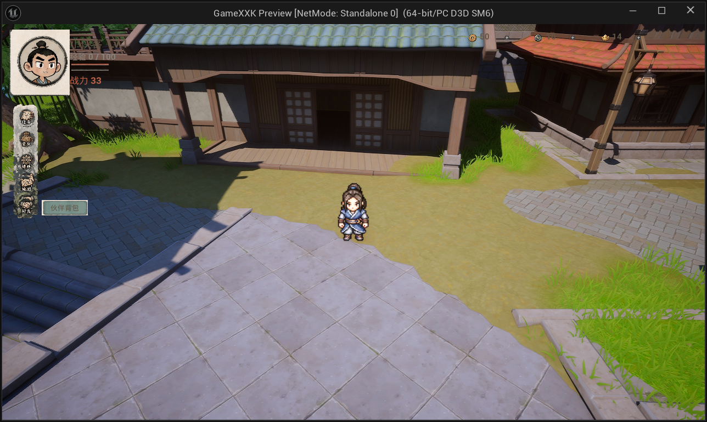
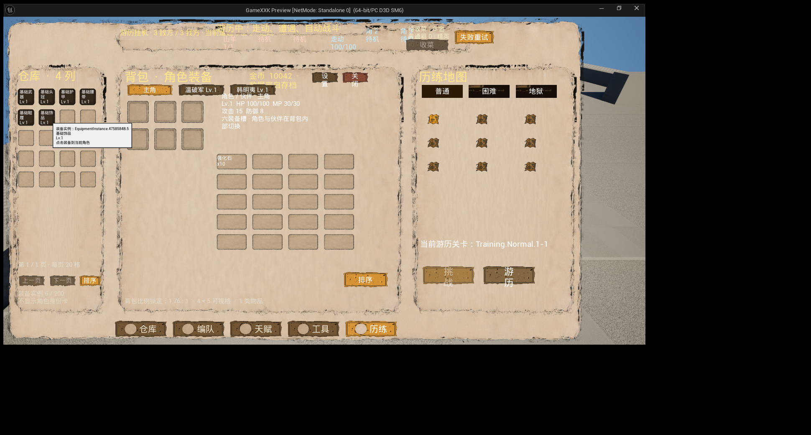
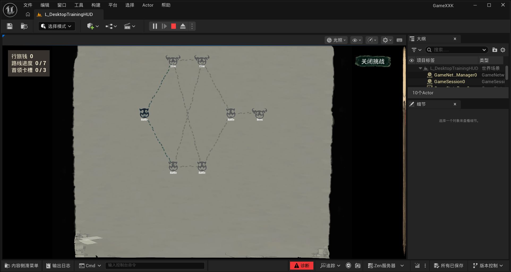
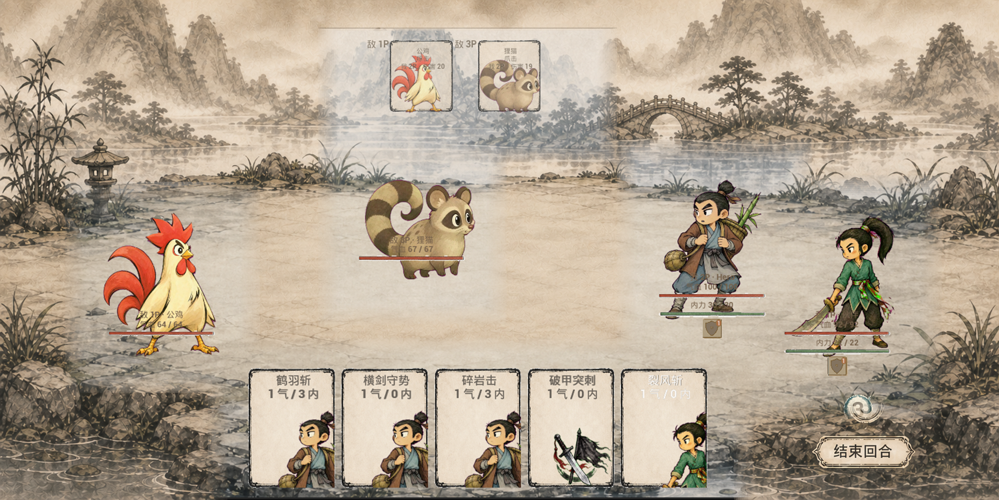

HD2D城镇探索
像素角色置于具有空间、光照与景深的城镇环境中。移动、NPC对话、任务、招募与商店为角色和卡牌提供人物、地点与叙事来源。
一款融合HD2D城镇探索、类《杀戮尖塔》路线卡牌挑战与桌面放置刷宝提升的队伍构筑单机RPG。主角、永久伙伴与任务NPC的卡牌进入同一副共享牌组，让“组队”直接变成可规划、可组合的出牌语言。
像素角色置于具有空间、光照与景深的城镇环境中。移动、NPC对话、任务、招募与商店为角色和卡牌提供人物、地点与叙事来源。
路线节点、敌方意图、普通/精英/首领战构成主动挑战。主角8张、伙伴5张、NPC3张共同组成共享牌组，并可加入最多3张首领牌。
常驻工作台承载游历挂机、仓库、背包、装备、编队、天赋与工具。挑战负责解锁，游历负责在已通关关卡低耗刷取。




城镇提供任务与角色，主动挑战检验构筑并给出高价值奖励，工作台游历持续积累装备与成长资源，成长后的队伍再回到更高难度的探索与挑战。当前默认演示路径是2D工作台 → 挑战路线图 → 全屏BattleBoard → 结算后返回路线或工作台。
GameXXK采用C++驱动的Slate/UMG体系。权威状态与界面表现分离，PlayerController统一管理屏幕生命周期、ZOrder、焦点和输入模式，关键WidgetTree使用稳定名称与稳定几何，便于自动化核对。
运行时状态、存档、卡牌战斗与历练数据
屏幕协调、懒创建、层级、焦点与返回栈
DesktopTrainingWorkbench / RouteMap / BattleBoard
WidgetTree、RebuildWidget、NativePaint与纹理缓存
以1920×1080为设计基准，通过ScaleToFit安全舞台统一桌面工作台与战斗HUD。
指针使用viewport-client本地DPI坐标，经Offset/Scale进入stage；NativePaint只画Board-local坐标，避免浮动窗口桌面原点污染。
HUD-only启动只创建当前必需表面；折叠后保留游历和轻量状态，重页面与Atlas按需加载和释放。
卡牌数值不是只靠手感填写，而是经过“目录合同 → 逐卡执行 → 规则集成 → 确定性模拟 → 锁定矩阵 → 正交矩阵 → 统计建议 → 真实PIE”的八层验证。
每场记录胜负、回合数、剩余生命、首回合死亡、主动出牌与自动结算、气力/内力消耗和闲置、按来源与CardId统计的伤害/治疗/护甲、状态生产与消费、过杀、过量治疗、目标失效、最大手牌与自动队列深度。
回答“当前正式构筑在普通、精英、首领节点的整体结果如何”。
每次只改变职业、装备套装、任务NPC、地势或成长档中的一个变量，控制其他seed和身份不变。
Wilson 95%区间定位偏差；建议上限为攻击倍率±15个百分点、固定值±2、气力±1、内力±3、敌方倍率±10%。建议不自动改代码，必须人工评审。
卡牌共享手牌与气力，但保留来源角色、职业标签和所有者；自动重放、协战、反击、格挡与DoT不计主动出牌。
完整效果按卡牌当前基础品质展示：普通×1，稀有伤害/治疗/护甲×2，珍稀×4；层数类按品质阶数递增。实现签名保留未缩放底值。
条件不满足时仍保留基础效果；目标模式在预览与确认时一致，资源不足或目标失效不得产生半结算。
泛用工具与六职业联动的队伍中枢
主角的设计重点不是复制某个伙伴，而是在八张配置里补足队伍缺口，并用联动牌读取伙伴已经建立的状态与资源。
12张泛用牌提供攻击、治疗、护甲、过牌和费用桥接；其余24张按六职业各四张建立跨角色接口，使换伙伴不仅改变数值，也改变主角的出牌方式。
泛用牌稳定开局 → 伙伴建立职业资源 → 主角联动牌放大 → 高等级泛用牌收束
泛用牌以0–2气为主；5/10/15/20级各解锁1张；剑意贯虹按攻击力×(260%+20%×气势层数)+气势层数结算。
| # | 卡牌 / CardId | 品质 | 费用 | 目标 | 获取 | 完整效果与数值 | 卡牌设计定位 |
|---|---|---|---|---|---|---|---|
| 001 | 青锋一式Hero.Generic.QingFengYiShi |
普通 | 1 气 / 0 内 | 单体敌方（点击后选择目标） | 初始解锁 | 基础：所选目标造成140%攻击伤害；持续效果：打出牌时，本次打出的牌气力消耗-1；仅主动出牌触发；不作用于效果来源单位；触发1次后失效 | 直接输出牌。以1 气 / 0 内换取关键数值140%、1、1；在主角体系中主要负责补位、桥接并把伙伴机制转成主角的回合收益。 |
| 002 | 鹤羽斩Hero.Generic.HeYuZhan |
普通 | 1 气 / 3 内 | 单体敌方（点击后选择目标） | 初始解锁 | 基础：所选目标造成160%攻击伤害；触发所选目标层数最高的流血、中毒或灼烧1次，并减少对应状态1层 | 状态伤害兑现牌。以1 气 / 3 内换取关键数值160%、1、1；在主角体系中主要负责补位、桥接并把伙伴机制转成主角的回合收益。 |
| 003 | 风身步Hero.Generic.FengShenBu |
普通 | 0 气 / 0 内 | 单体友方（点击后选择目标） | 初始解锁 | 基础：所选目标获得2层灵动；出牌者抽2张牌；出牌者弃置1张牌；消耗：打出后进入本局消耗区。 | 资源循环牌。以0 气 / 0 内换取关键数值2、2、1；在主角体系中主要负责补位、桥接并把伙伴机制转成主角的回合收益。 |
| 004 | 碎岩击Hero.Generic.SuiYanJi |
普通 | 1 气 / 3 内 | 单体敌方（点击后选择目标） | 初始解锁 | 基础：所选目标造成150%攻击伤害；所选目标获得3层破绽；所选目标获得1层标记 | 直接输出牌。以1 气 / 3 内换取关键数值150%、3、1；在主角体系中主要负责补位、桥接并把伙伴机制转成主角的回合收益。 |
| 005 | 归元术Hero.Generic.GuiYuanShu |
普通 | 1 气 / 0 内 | 单体友方（点击后选择目标） | 初始解锁 | 基础：所选目标恢复12点生命；清除所选目标的全部流血、中毒和灼烧；持续效果：打出牌时，本次打出的牌气力消耗-1；仅主动出牌触发；触发1次后失效 | 状态伤害兑现牌。以1 气 / 0 内换取关键数值12、1、1；在主角体系中主要负责补位、桥接并把伙伴机制转成主角的回合收益。 |
| 006 | 横剑守势Hero.Generic.HengJianShouShi |
普通 | 1 气 / 0 内 | 单体友方（点击后选择目标） | 初始解锁 | 基础：所选目标获得2层标记；所选目标获得16点护甲；所选目标登记1次格挡；格挡：敌方单体攻击牌结算后，造成100%攻击＋当前护甲并消耗1次。 | 护甲资源终结牌。以1 气 / 0 内换取关键数值2、16、1、100%、1；在主角体系中主要负责补位、桥接并把伙伴机制转成主角的回合收益。 |
| 007 | 凝神吐纳Hero.Generic.NingShenTuNa |
普通 | 0 气 / 0 内 | 自身（直接施放） | 初始解锁 | 基础：出牌者获得2层气势；出牌者获得10点内力；消耗：打出后进入本局消耗区。 | 资源循环牌。以0 气 / 0 内换取关键数值2、10；在主角体系中主要负责补位、桥接并把伙伴机制转成主角的回合收益。 |
| 008 | 观隙Hero.Generic.GuanXi |
普通 | 0 气 / 0 内 | 无需选择（直接施放） | 初始解锁 | 基础：出牌者抽3张牌；出牌者弃置1张牌；消耗：打出后进入本局消耗区。 | 资源循环牌。以0 气 / 0 内换取关键数值3、1；在主角体系中主要负责补位、桥接并把伙伴机制转成主角的回合收益。 |
| 009 | 破云一闪Hero.Generic.PoYunYiShan |
普通 | 1 气 / 3 内 | 单体敌方（点击后选择目标） | 主角 Lv.5 解锁 | 基础：所选目标造成160%攻击伤害；所选目标造成100%攻击伤害（当出牌者具有灵动；消耗至多1层灵动；数值按消耗层数结算）；出牌者抽1张牌（仅当前述消耗成功时） | 资源循环牌。以1 气 / 3 内换取关键数值160%、100%、1、1；在主角体系中主要负责补位、桥接并把伙伴机制转成主角的回合收益。 |
| 010 | 行气回环Hero.Generic.XingQiHuiHuan |
普通 | 0 气 / 0 内 | 无需选择（直接施放） | 主角 Lv.10 解锁 | 基础：出牌者抽2张牌；出牌者回复1点气力；消耗：打出后进入本局消耗区。 | 资源循环牌。以0 气 / 0 内换取关键数值2、1；在主角体系中主要负责补位、桥接并把伙伴机制转成主角的回合收益。 |
| 011 | 剑意贯虹Hero.Generic.JianYiGuanHong |
普通 | 2 气 / 6 内 | 单体敌方（点击后选择目标） | 主角 Lv.15 解锁 | 基础：所选目标造成260%攻击伤害；每消耗1层状态，本段攻击倍率+20个百分点（当出牌者具有气势；消耗全部气势；数值按消耗层数结算）；出牌者回复1点气力（前述消耗至少3层时，仅结算一次） | 资源循环牌。以2 气 / 6 内换取关键数值260%、1、20、1、3；在主角体系中主要负责补位、桥接并把伙伴机制转成主角的回合收益。 |
| 012 | 归元返照Hero.Generic.GuiYuanFanZhao |
普通 | 2 气 / 6 内 | 全体友方（直接施放） | 主角 Lv.20 解锁 | 基础：全体友方恢复6点生命；全体友方获得12点护甲；清除全体友方的全部流血、中毒和灼烧；出牌者抽2张牌 | 资源循环牌。以2 气 / 6 内换取关键数值6、12、2；在主角体系中主要负责补位、桥接并把伙伴机制转成主角的回合收益。 |
| 013 | 同锋引式Hero.Blade.TongFengYinShi |
普通 | 0 气 / 0 内 | 单体友方（点击后选择目标） | 初始解锁 | 基础：出牌者抽1张牌；所选目标获得2层气势；冲锋：此牌是本回合第一张主动牌打出时触发。；冲锋效果：持续效果：下一张主动牌结算后，重放本次触发牌的基础效果；仅主动出牌触发；触发1次后失效；收招：此牌是本回合最后一张主动牌时触发。；收招效果：持续效果：下个玩家回合第一张主动牌结算后，重放本牌的基础效果；仅主动出牌触发；触发1次后失效 | 顺序编排牌。以0 气 / 0 内换取关键数值1、2、1、1；在主角体系中主要负责补位、桥接并把伙伴机制转成主角的回合收益。 |
| 014 | 血路相承Hero.Blade.XueLuXiangCheng |
普通 | 1 气 / 3 内 | 单体敌方（点击后选择目标） | 初始解锁 | 基础：所选目标造成150%攻击伤害；所选目标获得8层流血；冲锋：此牌是本回合第一张主动牌打出时触发。；冲锋效果：持续效果：下次攻击时，触发所选目标的流血1次；每次按当前层数造成生命伤害并减少1层；仅主动出牌触发；触发状态伤害时不减层；触发1次后失效；当所选目标具有流血；收招：此牌是本回合最后一张主动牌时触发。；收招效果：持续效果：下个玩家回合首次主动攻击指定状态目标时，出牌者抽2张牌；仅主动出牌触发；触发1次后失效；当所选目标具有流血；持续效果：下个玩家回合首次主动攻击指定状态目标时，出牌者回复1点气力；仅主动出牌触发；触发1次后失效；当所选目标具有流血 | 顺序编排牌。以1 气 / 3 内换取关键数值150%、8、1、1、1；在主角体系中主要负责补位、桥接并把伙伴机制转成主角的回合收益。 |
| 015 | 迎锋换步Hero.Blade.YingFengHuanBu |
普通 | 1 气 / 0 内 | 自身（直接施放） | 初始解锁 | 基础：出牌者获得2层标记；出牌者获得3层灵动；出牌者登记2次反击；冲锋：此牌是本回合第一张主动牌打出时触发。；冲锋效果：持续效果：下一张主动牌结算前，本次打出的牌获得2层灵动；仅主动出牌触发；触发1次后失效；持续效果：下一张主动牌结算前，本次打出的牌登记1次反击；仅主动出牌触发；触发1次后失效；收招：此牌是本回合最后一张主动牌时触发。；收招效果：持续效果：下个玩家回合开始时，出牌者获得2层标记；触发1次后失效；持续效果：下个玩家回合开始时，出牌者登记2次反击；触发1次后失效；反击：敌方单体攻击牌结算后，造成100%攻击并消耗1次。 | 顺序编排牌。以1 气 / 0 内换取关键数值2、3、2、2、1；在主角体系中主要负责补位、桥接并把伙伴机制转成主角的回合收益。 |
| 016 | 同袍聚势Hero.Blade.TongPaoJuShi |
普通 | 1 气 / 0 内 | 单体友方（点击后选择目标） | 初始解锁 | 基础：所选目标获得3层气势；持续效果：下次攻击时，每消耗1层气势，本段攻击倍率+10个百分点；仅主动出牌触发；触发状态伤害时不减层；触发1次后失效；当出牌者具有气势；冲锋：此牌是本回合第一张主动牌打出时触发。；冲锋效果：持续效果：下一张主动牌结算前，本次打出的牌获得3层气势；仅主动出牌触发；触发1次后失效；收招：此牌是本回合最后一张主动牌时触发。；收招效果：持续效果：下个玩家回合第一张主动牌结算前，本次打出的牌气力消耗改为0；仅主动出牌触发；触发1次后失效 | 顺序编排牌。以1 气 / 0 内换取关键数值3、1、10、1、3；在主角体系中主要负责补位、桥接并把伙伴机制转成主角的回合收益。 |
| 017 | 铁壁同守Hero.Guard.TieBiTongShou |
普通 | 1 气 / 0 内 | 单体友方（点击后选择目标） | 初始解锁 | 基础：所选目标获得18点护甲；所选目标登记2次格挡；格挡：敌方单体攻击牌结算后，造成100%攻击＋当前护甲并消耗1次。 | 护甲资源终结牌。以1 气 / 0 内换取关键数值18、2、100%、1；在主角体系中主要负责补位、桥接并把伙伴机制转成主角的回合收益。 |
| 018 | 借甲还锋Hero.Guard.JieJiaHuanFeng |
普通 | 1 气 / 3 内 | 单体敌方（点击后选择目标） | 初始解锁 | 基础：由护甲最高友方对所选目标造成100%攻击+当前护甲的伤害，不消耗护甲；护甲最高友方获得10点护甲；护甲最高友方登记1次格挡；格挡：敌方单体攻击牌结算后，造成100%攻击＋当前护甲并消耗1次。 | 护甲资源终结牌。以1 气 / 3 内换取关键数值100%、10、1、100%、1；在主角体系中主要负责补位、桥接并把伙伴机制转成主角的回合收益。 |
| 019 | 列阵承锋Hero.Guard.LieZhenChengFeng |
普通 | 2 气 / 0 内 | 全体友方（直接施放） | 初始解锁 | 基础：全体友方获得8点护甲；全体友方登记1次格挡；格挡：敌方单体攻击牌结算后，造成100%攻击＋当前护甲并消耗1次。 | 护甲资源终结牌。以2 气 / 0 内换取关键数值8、1、100%、1；在主角体系中主要负责补位、桥接并把伙伴机制转成主角的回合收益。 |
| 020 | 玄甲镇岳Hero.Guard.XuanJiaZhenYue |
普通 | 2 气 / 6 内 | 单体友方（点击后选择目标） | 初始解锁 | 基础：消耗所选目标全部护甲，对全体敌方造成（100%+每点护甲20个百分点）攻击伤害 | 护甲资源终结牌。以2 气 / 6 内换取关键数值100%、20；在主角体系中主要负责补位、桥接并把伙伴机制转成主角的回合收益。 |
| 021 | 以血催方Hero.Healer.YiXueCuiFang |
普通 | 0 气 / 0 内 | 无需选择（直接施放） | 初始解锁 | 基础：全体友方失去1点生命，最低保留1点；本牌每实际扣血1名友方，出牌者获得2层药效；本次获得至少6层时再获得1层气势；出牌者抽1张牌；药效：下一次治疗或治疗反转每层＋1；结算时全部消耗；累计获得每满6层时获得1层气势。 | 药效与药方引擎牌。以0 气 / 0 内换取关键数值1、1、1、2、6；在主角体系中主要负责补位、桥接并把伙伴机制转成主角的回合收益。 |
| 022 | 回春逆脉Hero.Healer.HuiChunNiMai |
普通 | 1 气 / 3 内 | 任意存活单位（点击后选择目标） | 初始解锁 | 基础：消耗出牌者全部药效；若所选目标为友方，恢复10+药效层数生命；若为敌方，失去10+药效层数生命；清除所选目标的全部流血、中毒和灼烧；药效：下一次治疗或治疗反转每层＋1；结算时全部消耗；累计获得每满6层时获得1层气势。 | 药效与药方引擎牌。以1 气 / 3 内换取关键数值10、10、1、6、1；在主角体系中主要负责补位、桥接并把伙伴机制转成主角的回合收益。 |
| 023 | 毒火同炉Hero.Healer.DuHuoTongLu |
普通 | 1 气 / 3 内 | 单体敌方（点击后选择目标） | 初始解锁 | 基础：所选目标造成130%攻击伤害；所选目标获得6层中毒；所选目标获得2层灼烧；对所选目标毒爆：分别结算流血、中毒、灼烧并各减少1层；蚀伤只追加伤害；出牌者获得6层药效；药效：下一次治疗或治疗反转每层＋1；结算时全部消耗；累计获得每满6层时获得1层气势。 | 药效与药方引擎牌。以1 气 / 3 内换取关键数值130%、6、2、1、6；在主角体系中主要负责补位、桥接并把伙伴机制转成主角的回合收益。 |
| 024 | 百草济阵Hero.Healer.BaiCaoJiZhen |
普通 | 2 气 / 6 内 | 无需选择（直接施放） | 初始解锁 | 基础：消耗出牌者全部药效；全体友方恢复6+药效层数生命；全体敌方获得1层中毒；全体敌方获得1层灼烧；药效：下一次治疗或治疗反转每层＋1；结算时全部消耗；累计获得每满6层时获得1层气势。 | 药效与药方引擎牌。以2 气 / 6 内换取关键数值6、1、1、1、6；在主角体系中主要负责补位、桥接并把伙伴机制转成主角的回合收益。 |
| 025 | 风眼定弦Hero.Hunter.FengYanDingXian |
普通 | 0 气 / 3 内 | 无需选择（直接施放） | 初始解锁 | 基础：出牌者抽2张牌；出牌者弃置1张牌；出牌者获得2层灵动；出牌者获得3层蓄力 | 蓄力生产/重箭兑现牌。以0 气 / 3 内换取关键数值2、1、2、3；在主角体系中主要负责补位、桥接并把伙伴机制转成主角的回合收益。 |
| 026 | 裂羽连矢Hero.Hunter.LieYuLianShi |
普通 | 1 气 / 3 内 | 单体敌方（点击后选择目标） | 初始解锁 | 基础：所选目标造成140%攻击伤害；所选目标获得8层流血；重箭：消耗全部蓄力，逐层触发本牌重箭效果。；重箭效果：每消耗1层，追加1段50%攻击伤害。 | 蓄力生产/重箭兑现牌。以1 气 / 3 内换取关键数值140%、8、1、1、50%；在主角体系中主要负责补位、桥接并把伙伴机制转成主角的回合收益。 |
| 027 | 淬毒穿心Hero.Hunter.CuiDuChuanXin |
普通 | 1 气 / 3 内 | 单体敌方（点击后选择目标） | 初始解锁 | 基础：所选目标造成130%攻击伤害；所选目标获得6层中毒；对所选目标毒爆：分别结算流血、中毒、灼烧并各减少1层；蚀伤只追加伤害；重箭：消耗全部蓄力，逐层触发本牌重箭效果。；重箭效果：每消耗1层，再触发1次毒爆。 | 蓄力生产/重箭兑现牌。以1 气 / 3 内换取关键数值130%、6、1、1、1；在主角体系中主要负责补位、桥接并把伙伴机制转成主角的回合收益。 |
| 028 | 回风贯日Hero.Hunter.HuiFengGuanRi |
普通 | 1 气 / 6 内 | 单体敌方（点击后选择目标） | 初始解锁 | 基础：所选目标造成150%攻击伤害；重箭：消耗全部蓄力，逐层触发本牌重箭效果。；重箭效果：每消耗1层，本牌首段攻击倍率+40个百分点并抽1张牌；消耗至少3层时回复1点气力一次。 | 蓄力生产/重箭兑现牌。以1 气 / 6 内换取关键数值150%、1、40、1、3；在主角体系中主要负责补位、桥接并把伙伴机制转成主角的回合收益。 |
| 029 | 炎序燎原Hero.Mage.YanXuLiaoYuan |
普通 | 1 气 / 3 内 | 全体敌方（直接施放） | 初始解锁 | 基础：全体敌方造成100%攻击伤害；全体敌方获得4层灼烧；从抽牌堆或弃牌堆检索1张尚未完成的主角法术任务牌加入手牌；法术任务：主角8张装备牌各主动打出一次后，依序重放基础效果并触发阵赏。；阵赏·炎：全体敌方获得8层灼烧，再触发2次灼烧伤害。 | 检索与任务推进牌。以1 气 / 3 内换取关键数值100%、4、1、8、8；在主角体系中主要负责补位、桥接并把伙伴机制转成主角的回合收益。 |
| 030 | 寒序凝川Hero.Mage.HanXuNingChuan |
普通 | 0 气 / 0 内 | 自身（直接施放） | 初始解锁 | 基础：出牌者获得等于当前内力25%的护甲；出牌者回复6点内力；溢出内力按100%转为护甲；法术任务：主角8张装备牌各主动打出一次后，依序重放基础效果并触发阵赏。；阵赏·冰：消耗自身全部护甲；按护甲快照层数，对敌方全体逐段造成20%攻击伤害。 | 护甲资源终结牌。以0 气 / 0 内换取关键数值25%、6、100%、8、20%；在主角体系中主要负责补位、桥接并把伙伴机制转成主角的回合收益。 |
| 031 | 雷序引霆Hero.Mage.LeiXuYinTing |
普通 | 1 气 / 3 内 | 全体敌方（直接施放） | 初始解锁 | 基础：全体敌方获得3层标记；按全体敌方当前标记层数，逐层造成30%攻击伤害；从抽牌堆或弃牌堆检索1张尚未完成的主角法术任务牌加入手牌；法术任务：主角8张装备牌各主动打出一次后，依序重放基础效果并触发阵赏。；阵赏·雷：全体敌方获得3层标记，再按各目标标记快照逐层造成60%攻击伤害。 | 检索与任务推进牌。以1 气 / 3 内换取关键数值3、30%、1、8、3；在主角体系中主要负责补位、桥接并把伙伴机制转成主角的回合收益。 |
| 032 | 归序通玄Hero.Mage.GuiXuTongXuan |
普通 | 0 气 / 0 内 | 无需选择（直接施放） | 初始解锁 | 基础：出牌者抽2张牌；出牌者弃置1张牌；法术任务：主角8张装备牌各主动打出一次后，依序重放基础效果并触发阵赏。；阵赏·通用：抽4张牌、回复2点气力；本回合后续主角牌气力消耗-1。 | 检索与任务推进牌。以0 气 / 0 内换取关键数值2、1、8、4、2；在主角体系中主要负责补位、桥接并把伙伴机制转成主角的回合收益。 |
| 033 | 观势落子Hero.Formation.GuanShiLuoZi |
普通 | 0 气 / 3 内 | 单体敌方（点击后选择目标） | 初始解锁 | 基础：所选目标造成80%攻击伤害；触发当前地势收益1次；出牌者抽1张牌；地势：按当前地势触发对应效果。 | 地势条件与场地收益牌。以0 气 / 3 内换取关键数值80%、1、1；在主角体系中主要负责补位、桥接并把伙伴机制转成主角的回合收益。 |
| 034 | 移阵回响Hero.Formation.YiZhenHuiXiang |
普通 | 1 气 / 3 内 | 单体敌方（点击后选择目标） | 初始解锁 | 基础：触发当前地势收益2次；若本回合已实际换场，改为3次；出牌者回复1点气力（仅当前述结果成功时）；地势：按当前地势触发对应效果。 | 地势条件与场地收益牌。以1 气 / 3 内换取关键数值2、3、1；在主角体系中主要负责补位、桥接并把伙伴机制转成主角的回合收益。 |
| 035 | 连营布势Hero.Formation.LianYingBuShi |
普通 | 1 气 / 0 内 | 单体敌方（点击后选择目标） | 初始解锁 | 基础：持续效果：每张主动牌结算后，触发当前地势收益1次；仅主动出牌触发；触发3次后失效 | 地势条件与场地收益牌。以1 气 / 0 内换取关键数值1、3；在主角体系中主要负责补位、桥接并把伙伴机制转成主角的回合收益。 |
| 036 | 六合归一Hero.Formation.LiuHeGuiYi |
普通 | 2 气 / 6 内 | 单体敌方（点击后选择目标） | 初始解锁 | 基础：触发平原收益1次（敌方目标获得2层灼烧）；触发断崖收益1次（敌方目标获得2层破绽、1层标记）；触发山林收益1次（全体友方恢复4点生命）；触发水岸收益1次（全体友方获得3点内力）；触发村镇收益1次（抽1张牌，全体友方获得4点护甲）；触发洞窟收益1次（全体友方获得8点护甲并登记1次格挡）；触发当前地势收益1次；地势：按当前地势触发对应效果。 | 地势条件与场地收益牌。以2 气 / 6 内换取关键数值1、2、1、2、1；在主角体系中主要负责补位、桥接并把伙伴机制转成主角的回合收益。 |
用首牌与末牌编排整回合的刀法职业
刀客要求玩家关注牌的顺序，而不只是单张强度。首张主动牌触发冲锋，结束回合前的最后一张主动牌成为收招。
两张固定核心保证任何出生卡组都能开始循环；血刃、断势、游刃、藏锋四条路线分别经营流血、气势、反击和延迟留式。
冲锋起手 → 中段铺状态或反击 → 收招保存 → 下回合延续
反击为100%攻击且按独立来源结算；自动重放不计主动出牌，避免偷触发冲锋、收招与套装张数。
| # | 卡牌 / CardId | 品质 | 费用 | 目标 | 获取 | 完整效果与数值 | 卡牌设计定位 |
|---|---|---|---|---|---|---|---|
| 061 | 裂风斩Profession.Blade.LieFengZhan |
普通 | 1 气 / 0 内 | 单体敌方（点击后选择目标） | 固定核心牌 | 基础：所选目标造成100%攻击伤害；所选目标获得1层流血；冲锋：此牌是本回合第一张主动牌打出时，下一张主动牌基础效果再结算一次。；收招：此牌是本回合最后一张主动牌时，返还本回合首张主动牌至手牌（原费用）。 | 顺序编排牌。以1 气 / 0 内换取关键数值100%、1；在刀客体系中主要负责承担顺序编排、延迟收益与状态连击。 |
| 062 | 回锋架势Profession.Blade.HuiFengJiaShi |
普通 | 1 气 / 0 内 | 自身（直接施放） | 固定核心牌 | 基础：出牌者获得1层灵动；冲锋：此牌是本回合第一张主动牌打出时，下一张主动牌结算后，加入其0费临时复制。；收招：此牌是本回合最后一张主动牌时，获得2层标记；下个敌方阶段最先以你为目标的2张攻击牌结算前，各获得2层灵动并反击1次。 | 顺序编排牌。以1 气 / 0 内换取关键数值1、0、2、2、2；在刀客体系中主要负责承担顺序编排、延迟收益与状态连击。 |
| 063 | 封喉Profession.Blade.FengHou |
普通 | 1 气 / 2 内 | 单体敌方（点击后选择目标） | 职业随机池 | 基础：所选目标造成100%攻击伤害；所选目标获得5层流血；血势：每层目标流血使本段攻击倍率+10%。；冲锋：此牌是本回合第一张主动牌打出时，下一张主动牌结算后返回手牌一次。；收招：此牌是本回合最后一张主动牌时，下回合结束前最先2次流血不减层。 | 顺序编排牌。以1 气 / 2 内换取关键数值100%、5、10%、2；在刀客体系中主要负责承担顺序编排、延迟收益与状态连击。 |
| 064 | 疾雨连斩Profession.Blade.JiYuLianZhan |
普通 | 2 气 / 5 内 | 单体敌方（点击后选择目标） | 职业随机池 | 基础：所选目标获得3层流血；所选目标造成55%攻击伤害，共3段；血势：每层目标流血使本段攻击倍率+10%。；冲锋：此牌是本回合第一张主动牌打出时，记录下一张主动牌，下回合自动重放其基础效果。；收招：此牌是本回合最后一张主动牌时，下回合最先3次流血各抽1张。 | 顺序编排牌。以2 气 / 5 内换取关键数值3、55%、3、10%、3；在刀客体系中主要负责承担顺序编排、延迟收益与状态连击。 |
| 065 | 饮血刀Profession.Blade.YinXueDao |
稀有 | 2 气 / 4 内 | 单体敌方（点击后选择目标） | 职业随机池 | 基础：所选目标造成240%攻击伤害；所选目标获得3层流血；回复本次命中所触发的流血伤害。；血势：每层目标流血使本段攻击倍率+10%。；冲锋：此牌是本回合第一张主动牌打出时，下一张主动牌的状态/护甲消耗，结算后恢复。；收招：此牌是本回合最后一张主动牌时，下回合结束前刀客触发的流血回复等量生命（累计上限12）。 | 顺序编排牌。以2 气 / 4 内换取关键数值240%、3、10%、12；在刀客体系中主要负责承担顺序编排、延迟收益与状态连击。 |
| 066 | 浪断Profession.Blade.LangDuan |
普通 | 1 气 / 3 内 | 单体敌方（点击后选择目标） | 职业随机池 | 基础：所选目标造成100%攻击伤害；本次命中所触发的流血不减层。；血势：每层目标流血使本段攻击倍率+10%。；冲锋：此牌是本回合第一张主动牌打出时，下一张单体牌同时作用于另一合法目标；否则抽2张。；收招：此牌是本回合最后一张主动牌时，下回合首张以流血敌人为目标的牌结算后返回手牌。 | 顺序编排牌。以1 气 / 3 内换取关键数值100%、10%、2；在刀客体系中主要负责承担顺序编排、延迟收益与状态连击。 |
| 067 | 断岳Profession.Blade.DuanYue |
稀有 | 2 气 / 5 内 | 单体敌方（点击后选择目标） | 职业随机池 | 基础：所选目标造成280%攻击伤害；所选目标获得4层破绽；出牌者获得2层气势；乘势：每层自身气势使本段攻击倍率+10%。；冲锋：此牌是本回合第一张主动牌打出时，下一张主动牌气力消耗为0。；收招：此牌是本回合最后一张主动牌时，下回合结束前破绽不减不清；下回合首张以破绽敌人为目标的牌额外重放。 | 顺序编排牌。以2 气 / 5 内换取关键数值280%、4、2、10%、0；在刀客体系中主要负责承担顺序编排、延迟收益与状态连击。 |
| 068 | 破军Profession.Blade.PoJun |
稀有 | 2 气 / 6 内 | 单体敌方（点击后选择目标） | 职业随机池 | 基础：所选目标造成260%攻击伤害；消耗至多3层破绽，每层追加1段50%攻击。；乘势：每层自身气势使本段攻击倍率+10%。；冲锋：此牌是本回合第一张主动牌打出时，下一张主动牌内力消耗为0。；收招：此牌是本回合最后一张主动牌时，下回合首张消耗敌方状态的牌结算后，生成0费临时复制。 | 顺序编排牌。以2 气 / 6 内换取关键数值260%、3、1、50%、10%；在刀客体系中主要负责承担顺序编排、延迟收益与状态连击。 |
| 069 | 战意沸腾Profession.Blade.ZhanYiFeiTeng |
稀有 | 1 气 / 0 内 | 自身（直接施放） | 职业随机池 | 基础：出牌者获得3层气势；出牌者获得6点内力；乘势：每层自身气势使本段攻击倍率+10%。；冲锋：此牌是本回合第一张主动牌打出时，下一张主动牌结算后，全额返还气力与内力。；收招：此牌是本回合最后一张主动牌时，下回合首张基础气力≥2的牌返还气力并抽2张。 | 顺序编排牌。以1 气 / 0 内换取关键数值3、6、10%、2、2；在刀客体系中主要负责承担顺序编排、延迟收益与状态连击。 |
| 070 | 斩尽Profession.Blade.ZhanJin |
珍稀 | 3 气 / 12 内 | 单体敌方（点击后选择目标） | 职业随机池 | 基础：所选目标造成800%攻击伤害；若本牌完成击杀，返还全部费用并抽1张。；乘势：每层自身气势使本段攻击倍率+10%。；冲锋：此牌是本回合第一张主动牌打出时，下一张主动牌在出牌数与套装门槛中计为2张。；收招：此牌是本回合最后一张主动牌时，下回合首张完成击杀的牌结算后，生成0费临时复制。 | 顺序编排牌。以3 气 / 12 内换取关键数值800%、1、10%、2、0；在刀客体系中主要负责承担顺序编排、延迟收益与状态连击。 |
| 071 | 借势回锋Profession.Blade.JieShiHuiFeng |
普通 | 1 气 / 0 内 | 自身（直接施放） | 职业随机池 | 基础：出牌者获得1层灵动；出牌者登记1次反击；冲锋：此牌是本回合第一张主动牌打出时，记录下一张主动牌，下回合加入其0费临时复制。；收招：此牌是本回合最后一张主动牌时，获得2层标记；下个敌方阶段首次反击齐射后，重新登记全部反击来源。 | 顺序编排牌。以1 气 / 0 内换取关键数值1、1、0、2；在刀客体系中主要负责承担顺序编排、延迟收益与状态连击。 |
| 072 | 逐影Profession.Blade.ZhuYing |
普通 | 1 气 / 2 内 | 单体敌方（点击后选择目标） | 职业随机池 | 基础：所选目标造成90%攻击伤害；出牌者获得2层灵动；出牌者登记1次反击；冲锋：此牌是本回合第一张主动牌打出时，下一张主动牌不弃牌，下回合按原费用返回手牌。；收招：此牌是本回合最后一张主动牌时，下个敌方阶段最先2次成功闪避不消耗灵动。 | 顺序编排牌。以1 气 / 2 内换取关键数值90%、2、1、2；在刀客体系中主要负责承担顺序编排、延迟收益与状态连击。 |
| 073 | 破浪突进Profession.Blade.PoLangTuJin |
普通 | 1 气 / 3 内 | 单体敌方（点击后选择目标） | 职业随机池 | 基础：所选目标造成110%攻击伤害；出牌者获得2层标记；出牌者登记1次反击；冲锋：此牌是本回合第一张主动牌打出时，下一张主动牌不替换收招候选。；收招：此牌是本回合最后一张主动牌时，反击齐射前把标记转移给攻击者（≤待结算反击数），反击获得标记加成。 | 顺序编排牌。以1 气 / 3 内换取关键数值110%、2、1；在刀客体系中主要负责承担顺序编排、延迟收益与状态连击。 |
| 074 | 一式断江Profession.Blade.YiShiDuanJiang |
珍稀 | 2 气 / 7 内 | 单体敌方（点击后选择目标） | 职业随机池 | 基础：所选目标造成640%攻击伤害；出牌者登记1次反击；冲锋：此牌是本回合第一张主动牌打出时，下一张主动牌结算后，保留其余手牌至下回合。；收招：此牌是本回合最后一张主动牌时，首次反击齐射中，每个反击来源对全体敌人各反击一次。 | 顺序编排牌。以2 气 / 7 内换取关键数值640%、1；在刀客体系中主要负责承担顺序编排、延迟收益与状态连击。 |
| 075 | 惊鸿出鞘Profession.Blade.JingHongChuQiao |
普通 | 1 气 / 3 内 | 单体敌方（点击后选择目标） | 职业随机池 | 基础：所选目标造成90%攻击伤害；冲锋：此牌是本回合第一张主动牌打出时，下一张主动牌气力-1（最低0），结算后抽1张。；收招：此牌是本回合最后一张主动牌时，将冲锋效果保存为「藏式」。；藏式：下回合第一张主动牌消耗；未消耗则回合末失效。；开锋：本牌消耗藏式时，追加1段90%攻击。 | 顺序编排牌。以1 气 / 3 内换取关键数值90%、1、0、1、1；在刀客体系中主要负责承担顺序编排、延迟收益与状态连击。 |
| 076 | 横云开锋Profession.Blade.HengYunKaiFeng |
稀有 | 2 气 / 6 内 | 全体敌方（直接施放） | 职业随机池 | 基础：全体敌方造成140%攻击伤害；冲锋：此牌是本回合第一张主动牌打出时，下一张主动牌结算后抽2张。；收招：此牌是本回合最后一张主动牌时，将冲锋效果保存为「藏式」。；藏式：下回合第一张主动牌消耗；未消耗则回合末失效。；开锋：本牌消耗藏式时，将该藏式复制为「余式」，继续作用于本回合下一张主动牌；余式不再产生余式。 | 顺序编排牌。以2 气 / 6 内换取关键数值140%、2；在刀客体系中主要负责承担顺序编排、延迟收益与状态连击。 |
| 077 | 敛息归鞘Profession.Blade.LianXiGuiQiao |
稀有 | 0 气 / 0 内 | 自身（直接施放） | 职业随机池 | 基础：出牌者获得5点内力；冲锋：此牌是本回合第一张主动牌打出时，下一张主动牌结算后，抽1张同角色牌（无则普通抽1张）。；收招：此牌是本回合最后一张主动牌时，将冲锋效果保存为「藏式」。；藏式：下回合第一张主动牌消耗；未消耗则回合末失效。 | 顺序编排牌。以0 气 / 0 内换取关键数值5、1、1；在刀客体系中主要负责承担顺序编排、延迟收益与状态连击。 |
| 078 | 抱刀守夜Profession.Blade.BaoDaoShouYe |
珍稀 | 1 气 / 0 内 | 自身（直接施放） | 职业随机池 | 基础：出牌者获得4层灵动；冲锋：此牌是本回合第一张主动牌打出时，下一张主动牌结算后，抽1张其他角色牌（无则普通抽1张）。；收招：此牌是本回合最后一张主动牌时，将冲锋效果保存为「藏式」。；藏式：下回合第一张主动牌消耗；未消耗则回合末失效。 | 顺序编排牌。以1 气 / 0 内换取关键数值4、1、1；在刀客体系中主要负责承担顺序编排、延迟收益与状态连击。 |
保护队友的动作同时建立反击输出
守卫不是被动堆甲，而是主动决定保护谁、何时承伤，以及何时把护甲兑现成伤害。
护甲同时是生存资源、格挡伤害加值和群体终结技燃料；援护把坦克职责变成可选择的卡牌动作。
加甲 → 援护承伤 → 格挡反击 → 保甲续航或全耗甲群攻
格挡=100%攻击+当前护甲且不耗甲；全耗甲群攻每消耗1点护甲增加20个百分点倍率。
| # | 卡牌 / CardId | 品质 | 费用 | 目标 | 获取 | 完整效果与数值 | 卡牌设计定位 |
|---|---|---|---|---|---|---|---|
| 079 | 铁壁Profession.Guard.TieBi |
普通 | 1 气 / 0 内 | 自身（直接施放） | 固定核心牌 | 基础：出牌者获得14点护甲；出牌者登记1次格挡；出牌者获得1层标记；格挡：敌方单体攻击牌结算后，造成100%攻击＋当前护甲并消耗1次。 | 护甲资源终结牌。以1 气 / 0 内换取关键数值14、1、1、100%、1；在守卫体系中主要负责建立防线、转移单体攻击并把护甲转为进攻。 |
| 080 | 护主Profession.Guard.HuZhu |
普通 | 1 气 / 0 内 | 单体友方（点击后选择目标） | 固定核心牌 | 基础：所选目标获得8点护甲；出牌者获得8点护甲；由出牌者援护所选目标，转移1次下一次单体直接攻击；出牌者登记1次格挡；出牌者获得1层标记；格挡：敌方单体攻击牌结算后，造成100%攻击＋当前护甲并消耗1次。 | 护甲资源终结牌。以1 气 / 0 内换取关键数值8、8、1、1、1；在守卫体系中主要负责建立防线、转移单体攻击并把护甲转为进攻。 |
| 081 | 震盾Profession.Guard.ZhenDun |
普通 | 1 气 / 0 内 | 单体敌方（点击后选择目标） | 职业随机池 | 基础：由出牌者对所选目标造成100%攻击+当前护甲的伤害，不消耗护甲；出牌者获得6点护甲；出牌者获得1层标记 | 护甲资源终结牌。以1 气 / 0 内换取关键数值100%、6、1；在守卫体系中主要负责建立防线、转移单体攻击并把护甲转为进攻。 |
| 082 | 固守Profession.Guard.GuShou |
普通 | 0 气 / 0 内 | 自身（直接施放） | 职业随机池 | 基础：出牌者获得6点护甲；出牌者获得2点内力；出牌者获得1层标记 | 资源循环牌。以0 气 / 0 内换取关键数值6、2、1；在守卫体系中主要负责建立防线、转移单体攻击并把护甲转为进攻。 |
| 083 | 反震甲Profession.Guard.FanZhenJia |
稀有 | 1 气 / 0 内 | 自身（直接施放） | 职业随机池 | 基础：出牌者获得24点护甲；出牌者登记2次格挡；出牌者获得2层标记；格挡：敌方单体攻击牌结算后，造成100%攻击＋当前护甲并消耗1次。 | 护甲资源终结牌。以1 气 / 0 内换取关键数值24、2、2、100%、1；在守卫体系中主要负责建立防线、转移单体攻击并把护甲转为进攻。 |
| 084 | 镇岳令Profession.Guard.ZhenYueLing |
稀有 | 2 气 / 6 内 | 全体敌方（直接施放） | 职业随机池 | 基础：消耗出牌者全部护甲，对全体敌方造成（80%+每点护甲20个百分点）攻击伤害；全体友方获得16点护甲；全体友方登记1次格挡；出牌者获得2层标记；格挡：敌方单体攻击牌结算后，造成100%攻击＋当前护甲并消耗1次。 | 护甲资源终结牌。以2 气 / 6 内换取关键数值80%、20、16、1、2；在守卫体系中主要负责建立防线、转移单体攻击并把护甲转为进攻。 |
| 085 | 援护步Profession.Guard.YuanHuBu |
普通 | 0 气 / 0 内 | 生命最低友方（自动结算） | 职业随机池 | 基础：生命最低友方获得6点护甲；出牌者获得6点护甲；由出牌者援护生命最低友方，转移1次下一次单体直接攻击；出牌者登记1次格挡；出牌者获得1层标记；格挡：敌方单体攻击牌结算后，造成100%攻击＋当前护甲并消耗1次。 | 护甲资源终结牌。以0 气 / 0 内换取关键数值6、6、1、1、1；在守卫体系中主要负责建立防线、转移单体攻击并把护甲转为进攻。 |
| 086 | 披甲行军Profession.Guard.PiJiaXingJun |
普通 | 1 气 / 0 内 | 全体友方（直接施放） | 职业随机池 | 基础：全体友方获得6点护甲；全体友方登记1次格挡；出牌者获得6点内力；出牌者获得1层标记；格挡：敌方单体攻击牌结算后，造成100%攻击＋当前护甲并消耗1次。 | 护甲资源终结牌。以1 气 / 0 内换取关键数值6、1、6、1、100%；在守卫体系中主要负责建立防线、转移单体攻击并把护甲转为进攻。 |
| 087 | 擒王盾击Profession.Guard.QinWangDunJi |
稀有 | 2 气 / 5 内 | 单体敌方（点击后选择目标） | 职业随机池 | 基础：由出牌者对所选目标造成100%攻击+当前护甲的伤害，不消耗护甲；所选目标获得4层破绽；所选目标获得2层标记 | 护甲资源终结牌。以2 气 / 5 内换取关键数值100%、4、2；在守卫体系中主要负责建立防线、转移单体攻击并把护甲转为进攻。 |
| 088 | 铁壁如山Profession.Guard.TieBiRuShan |
稀有 | 2 气 / 0 内 | 自身（直接施放） | 职业随机池 | 基础：出牌者获得48点护甲；出牌者获得2层破绽免疫；出牌者登记2次格挡；出牌者获得2层标记；格挡：敌方单体攻击牌结算后，造成100%攻击＋当前护甲并消耗1次。 | 护甲资源终结牌。以2 气 / 0 内换取关键数值48、2、2、2、100%；在守卫体系中主要负责建立防线、转移单体攻击并把护甲转为进攻。 |
| 089 | 壁垒反攻Profession.Guard.BiLeiFanGong |
稀有 | 2 气 / 6 内 | 全体敌方（直接施放） | 职业随机池 | 基础：消耗出牌者全部护甲，对全体敌方造成（120%+每点护甲20个百分点）攻击伤害；出牌者获得20点护甲；出牌者登记1次格挡；出牌者获得2层标记；格挡：敌方单体攻击牌结算后，造成100%攻击＋当前护甲并消耗1次。 | 护甲资源终结牌。以2 气 / 6 内换取关键数值120%、20、20、1、2；在守卫体系中主要负责建立防线、转移单体攻击并把护甲转为进攻。 |
| 090 | 不动如山Profession.Guard.BuDongRuShan |
珍稀 | 3 气 / 10 内 | 自身（直接施放） | 职业随机池 | 基础：出牌者获得144点护甲；出牌者登记3次格挡；出牌者下回合保留当前护甲；出牌者获得3层标记；格挡：敌方单体攻击牌结算后，造成100%攻击＋当前护甲并消耗1次。 | 护甲资源终结牌。以3 气 / 10 内换取关键数值144、3、3、100%、1；在守卫体系中主要负责建立防线、转移单体攻击并把护甲转为进攻。 |
| 091 | 磐石吐纳Profession.Guard.PanShiTuNa |
普通 | 0 气 / 0 内 | 自身（直接施放） | 职业随机池 | 基础：出牌者获得5点内力（当出牌者护甲不少于8）；出牌者抽1张牌（当出牌者护甲不少于8）；出牌者获得6点护甲（当出牌者护甲不少于8不成立）；出牌者获得1层标记 | 资源循环牌。以0 气 / 0 内换取关键数值5、8、1、8、6；在守卫体系中主要负责建立防线、转移单体攻击并把护甲转为进攻。 |
| 092 | 援军壁垒Profession.Guard.YuanJunBiLei |
普通 | 1 气 / 0 内 | 单体友方（点击后选择目标） | 职业随机池 | 基础：所选目标获得16点护甲；出牌者获得10点护甲；由出牌者援护所选目标，转移2次下一次单体直接攻击；出牌者登记2次格挡；出牌者获得1层标记；格挡：敌方单体攻击牌结算后，造成100%攻击＋当前护甲并消耗1次。 | 护甲资源终结牌。以1 气 / 0 内换取关键数值16、10、2、2、1；在守卫体系中主要负责建立防线、转移单体攻击并把护甲转为进攻。 |
| 093 | 盾阵推进Profession.Guard.DunZhenTuiJin |
普通 | 2 气 / 0 内 | 单体敌方（点击后选择目标） | 职业随机池 | 基础：由出牌者对所选目标造成100%攻击+当前护甲的伤害，不消耗护甲；全体友方获得6点护甲；出牌者获得1层标记 | 护甲资源终结牌。以2 气 / 0 内换取关键数值100%、6、1；在守卫体系中主要负责建立防线、转移单体攻击并把护甲转为进攻。 |
| 094 | 铁锁横江Profession.Guard.TieSuoHengJiang |
珍稀 | 2 气 / 6 内 | 自身（直接施放） | 职业随机池 | 基础：出牌者获得80点护甲；由出牌者援护其他全体友方，转移2次下一次单体直接攻击；出牌者登记2次格挡；出牌者获得3层标记；格挡：敌方单体攻击牌结算后，造成100%攻击＋当前护甲并消耗1次。 | 护甲资源终结牌。以2 气 / 6 内换取关键数值80、2、2、3、100%；在守卫体系中主要负责建立防线、转移单体攻击并把护甲转为进攻。 |
| 095 | 碎甲回击Profession.Guard.SuiJiaHuiJi |
稀有 | 1 气 / 0 内 | 单体敌方（点击后选择目标） | 职业随机池 | 基础：由出牌者对所选目标造成100%攻击+当前护甲的伤害，不消耗护甲；出牌者登记1次格挡；出牌者抽2张牌（当出牌者护甲不少于12）；格挡：敌方单体攻击牌结算后，造成100%攻击＋当前护甲并消耗1次。 | 护甲资源终结牌。以1 气 / 0 内换取关键数值100%、1、2、12、100%；在守卫体系中主要负责建立防线、转移单体攻击并把护甲转为进攻。 |
| 096 | 一夫当关Profession.Guard.YiFuDangGuan |
珍稀 | 3 气 / 12 内 | 全体友方（直接施放） | 职业随机池 | 基础：全体友方获得40点护甲；出牌者获得80点护甲；由出牌者援护其他全体友方，转移2次下一次单体直接攻击；出牌者登记3次格挡；出牌者获得3层标记；格挡：敌方单体攻击牌结算后，造成100%攻击＋当前护甲并消耗1次。 | 护甲资源终结牌。以3 气 / 12 内换取关键数值40、80、2、3、3；在守卫体系中主要负责建立防线、转移单体攻击并把护甲转为进攻。 |
用生命变化同时驱动治疗和状态伤害
药师围绕药效和药方经营生命变化，对友方治疗，对敌方则把同一治疗值转成直接失去生命。
药方首次使用增加费用，随后成为整场监听器；终端生命变化禁止递归，既保留组合感又避免无限循环。
获得药效 → 制造生命变化 → 药方监听 → 治疗或毒爆兑现
单体基础治疗不超过12、群体不超过6；药效每层+1；药方首次打出在基础气力上+1。
| # | 卡牌 / CardId | 品质 | 费用 | 目标 | 获取 | 完整效果与数值 | 卡牌设计定位 |
|---|---|---|---|---|---|---|---|
| 097 | 阴阳药引Profession.Healer.YaoYin |
普通 | 2 气 / 0 内 | 任意存活单位（点击后选择目标） | 固定核心牌 | 基础：若目标是友方：消耗出牌者全部药效；所选目标恢复8+药效层数生命；全体敌方获得1层中毒；全体敌方获得1层灼烧；若目标是敌方：消耗出牌者全部药效；所选目标获得2层中毒；所选目标获得2层灼烧；对所选目标毒爆：分别结算流血、中毒、灼烧并各减少1层；蚀伤只追加伤害；全体友方恢复4+药效层数生命；药方：首次打出本牌时气力+1并激活，本局持续；任一敌我单位实际生命变化时，药师获得等量层数药效（每笔伤害或治疗各计1层）。；药效：下一次治疗或治疗反转每层＋1；结算时全部消耗；累计获得每满6层时获得1层气势。 | 药效与药方引擎牌。以2 气 / 0 内换取关键数值8、1、1、2、2；在药师体系中主要负责承担续航、DoT铺设、毒爆兑现和生命变化引擎。 |
| 098 | 行气活血Profession.Healer.XingQiZhen |
普通 | 2 气 / 3 内 | 自身（直接施放） | 固定核心牌 | 基础：全体友方失去1点生命，最低保留1点；本牌每实际扣血1名友方，出牌者获得1层药效；出牌者抽1张牌；药方：首次打出本牌时气力+1并激活，本局持续；每回合首次打出当前气力消耗至少2的牌时，全体友方失去1点生命（最低保留1点）再恢复2点；每回合累计获得至少6层药效时，回复1点气力（每回合1次；敌方回合触发则下回合开始到账）。；药效：下一次治疗或治疗反转每层＋1；结算时全部消耗；累计获得每满6层时获得1层气势。 | 药效与药方引擎牌。以2 气 / 3 内换取关键数值1、1、1、1、1；在药师体系中主要负责承担续航、DoT铺设、毒爆兑现和生命变化引擎。 |
| 099 | 草木敷治Profession.Healer.CaoMuFuZhi |
普通 | 1 气 / 2 内 | 任意存活单位（点击后选择目标） | 职业随机池 | 基础：消耗出牌者全部药效；若所选目标为友方，恢复8+药效层数生命；若为敌方，失去8+药效层数生命；药方：首次打出本牌时气力+1并激活，本局持续；每回合首次完成实际治疗或药效反向伤害时，药师获得2层药效。；药效：下一次治疗或治疗反转每层＋1；结算时全部消耗；累计获得每满6层时获得1层气势。 | 药效与药方引擎牌。以1 气 / 2 内换取关键数值8、8、1、2、1；在药师体系中主要负责承担续航、DoT铺设、毒爆兑现和生命变化引擎。 |
| 100 | 清心散Profession.Healer.QingXinSan |
普通 | 1 气 / 3 内 | 任意存活单位（点击后选择目标） | 职业随机池 | 基础：若目标是友方：移除所选目标1层流血；移除所选目标1层中毒；移除所选目标1层灼烧；消耗出牌者全部药效；若所选目标为友方，恢复6+药效层数生命；若为敌方，失去6+药效层数生命；药方：首次打出本牌时气力+1并激活，本局持续；友方被清除的流血、中毒、灼烧每累计3层，药师获得1层药效（余数保留）。；药效：下一次治疗或治疗反转每层＋1；结算时全部消耗；累计获得每满6层时获得1层气势。 | 药效与药方引擎牌。以1 气 / 3 内换取关键数值1、1、1、6、6；在药师体系中主要负责承担续航、DoT铺设、毒爆兑现和生命变化引擎。 |
| 101 | 灵芝续命Profession.Healer.LingZhiXuMing |
稀有 | 2 气 / 6 内 | 任意存活单位（点击后选择目标） | 职业随机池 | 基础：消耗出牌者全部药效；若所选目标为友方，恢复10+药效层数生命；若为敌方，失去10+药效层数生命；若所选目标为友方，恢复2点生命；若为敌方，失去2点生命（当所选目标生命低于35%）；药方：首次打出本牌时气力+1并激活，本局持续；每回合首次有友方从生命不低于35%降到低于35%时，药师获得3层药效。；药效：下一次治疗或治疗反转每层＋1；结算时全部消耗；累计获得每满6层时获得1层气势。 | 药效与药方引擎牌。以2 气 / 6 内换取关键数值10、10、2、2、35%；在药师体系中主要负责承担续航、DoT铺设、毒爆兑现和生命变化引擎。 |
| 102 | 回春露Profession.Healer.HuiChunLu |
稀有 | 2 气 / 5 内 | 任意存活单位（点击后选择目标） | 职业随机池 | 基础：消耗出牌者全部药效；所选目标同阵营全体：若为友方，恢复5+药效层数生命；若为敌方，失去5+药效层数生命；药方：首次打出本牌时气力+1并激活，本局持续；每回合每完成3次有效友方治疗，抽1张牌（每回合最多2张）。；药效：下一次治疗或治疗反转每层＋1；结算时全部消耗；累计获得每满6层时获得1层气势。 | 药效与药方引擎牌。以2 气 / 5 内换取关键数值5、5、1、3、1；在药师体系中主要负责承担续航、DoT铺设、毒爆兑现和生命变化引擎。 |
| 103 | 止血草Profession.Healer.ZhiXueCao |
普通 | 0 气 / 2 内 | 任意存活单位（点击后选择目标） | 职业随机池 | 基础：若目标是友方：移除所选目标3层流血；消耗出牌者全部药效；若所选目标为友方，恢复4+药效层数生命；若为敌方，失去4+药效层数生命；药方：首次打出本牌时气力+1并激活，本局持续；每回合首次清除友方流血时，全体友方获得2点护甲。；药效：下一次治疗或治疗反转每层＋1；结算时全部消耗；累计获得每满6层时获得1层气势。 | 药效与药方引擎牌。以0 气 / 2 内换取关键数值3、4、4、1、2；在药师体系中主要负责承担续航、DoT铺设、毒爆兑现和生命变化引擎。 |
| 104 | 温养膏Profession.Healer.WenYangGao |
稀有 | 1 气 / 3 内 | 任意存活单位（点击后选择目标） | 职业随机池 | 基础：消耗出牌者全部药效；若所选目标为友方，恢复10+药效层数生命；若为敌方，失去10+药效层数生命；若目标是友方：所选目标获得12点护甲；药方：首次打出本牌时气力+1并激活，本局持续；每回合首次完成至少10点治疗或药效反向伤害时：对友方目标额外获得4点护甲，对敌方目标施加1层破绽。；药效：下一次治疗或治疗反转每层＋1；结算时全部消耗；累计获得每满6层时获得1层气势。 | 药效与药方引擎牌。以1 气 / 3 内换取关键数值10、10、12、1、10；在药师体系中主要负责承担续航、DoT铺设、毒爆兑现和生命变化引擎。 |
| 105 | 金疮续命Profession.Healer.JinChuangXuMing |
稀有 | 2 气 / 8 内 | 任意存活单位（点击后选择目标） | 职业随机池 | 基础：消耗出牌者全部药效；若所选目标为友方，恢复12+药效层数生命；若为敌方，失去12+药效层数生命；若目标是友方：所选目标获得2层灵动；药方：首次打出本牌时气力+1并激活，本局持续；每回合首次有友方从生命不低于30%降到低于30%时，该友方获得2层灵动。；药效：下一次治疗或治疗反转每层＋1；结算时全部消耗；累计获得每满6层时获得1层气势。 | 药效与药方引擎牌。以2 气 / 8 内换取关键数值12、12、2、1、30%；在药师体系中主要负责承担续航、DoT铺设、毒爆兑现和生命变化引擎。 |
| 106 | 药王归元Profession.Healer.YaoWangGuiYuan |
珍稀 | 2 气 / 12 内 | 任意存活单位（点击后选择目标） | 职业随机池 | 基础：消耗出牌者全部药效；所选目标同阵营全体：若为友方，恢复6+药效层数生命；若为敌方，失去6+药效层数生命；若目标是友方：移除所选目标同阵营全体3层流血；移除所选目标同阵营全体3层中毒；移除所选目标同阵营全体3层灼烧；所选目标同阵营全体获得7点内力；药方：首次打出本牌时气力+1并激活，本局持续；同一次结算中至少3个不同单位实际生命变化时，抽1张牌，全体友方获得2点内力（每回合1次）。；药效：下一次治疗或治疗反转每层＋1；结算时全部消耗；累计获得每满6层时获得1层气势。 | 药效与药方引擎牌。以2 气 / 12 内换取关键数值6、6、3、3、3；在药师体系中主要负责承担续航、DoT铺设、毒爆兑现和生命变化引擎。 |
| 107 | 百草毒Profession.Healer.BaiCaoDu |
普通 | 1 气 / 2 内 | 单体敌方（点击后选择目标） | 职业随机池 | 基础：所选目标获得6层中毒；药方：首次打出本牌时气力+1并激活，本局持续；每笔中毒伤害生效时，药师获得1层药效。 | 药效与药方引擎牌。以1 气 / 2 内换取关键数值6、1、1；在药师体系中主要负责承担续航、DoT铺设、毒爆兑现和生命变化引擎。 |
| 108 | 腐骨散Profession.Healer.FuGuSan |
稀有 | 2 气 / 5 内 | 单体敌方（点击后选择目标） | 职业随机池 | 基础：所选目标造成120%攻击伤害；所选目标获得7层流血；所选目标获得5层中毒；所选目标获得2层破绽；药方：首次打出本牌时气力+1并激活，本局持续；每回合每名同时具有流血和中毒的敌方，获得1层标记。 | 药效与药方引擎牌。以2 气 / 5 内换取关键数值120%、7、5、2、1；在药师体系中主要负责承担续航、DoT铺设、毒爆兑现和生命变化引擎。 |
| 109 | 蚀心香Profession.Healer.HuiQiXiang |
普通 | 1 气 / 4 内 | 全体敌方（直接施放） | 职业随机池 | 基础：全体敌方获得1层中毒；药方：首次打出本牌时气力+1并激活，本局持续；每回合首次使至少2名敌方获得中毒时，药师获得2层药效并抽1张牌。 | 药效与药方引擎牌。以1 气 / 4 内换取关键数值1、1、2、2、1；在药师体系中主要负责承担续航、DoT铺设、毒爆兑现和生命变化引擎。 |
| 110 | 连翘引毒Profession.Healer.LianQiaoJieDu |
普通 | 1 气 / 3 内 | 单体敌方（点击后选择目标） | 职业随机池 | 基础：所选目标获得5层中毒；对所选目标毒爆：分别结算流血、中毒、灼烧并各减少1层；蚀伤只追加伤害；药方：首次打出本牌时气力+1并激活，本局持续；每次毒爆包含至少2类持续伤害时，药师获得2层药效。 | 药效与药方引擎牌。以1 气 / 3 内换取关键数值5、1、1、2、2；在药师体系中主要负责承担续航、DoT铺设、毒爆兑现和生命变化引擎。 |
| 111 | 红花透骨Profession.Healer.YaoJiuWenShen |
普通 | 1 气 / 2 内 | 单体敌方（点击后选择目标） | 职业随机池 | 基础：所选目标造成70%攻击伤害；所选目标获得8层流血；药方：首次打出本牌时气力+1并激活，本局持续；每2笔流血伤害生效，药师获得1层药效（余数保留）。 | 药效与药方引擎牌。以1 气 / 2 内换取关键数值70%、8、1、2、1；在药师体系中主要负责承担续航、DoT铺设、毒爆兑现和生命变化引擎。 |
| 112 | 药囊飞投Profession.Healer.YaoNangFeiTou |
珍稀 | 2 气 / 6 内 | 全体敌方（直接施放） | 职业随机池 | 基础：全体敌方造成180%攻击伤害；全体敌方获得5层流血；全体敌方获得3层中毒；药方：首次打出本牌时气力+1并激活，本局持续；每回合首次直接攻击命中至少2名敌方时，回复1点气力。 | 药效与药方引擎牌。以2 气 / 6 内换取关键数值180%、5、3、1、2；在药师体系中主要负责承担续航、DoT铺设、毒爆兑现和生命变化引擎。 |
| 113 | 苦参麻散Profession.Healer.KuShenMaSan |
稀有 | 2 气 / 4 内 | 单体敌方（点击后选择目标） | 职业随机池 | 基础：所选目标获得9层中毒；所选目标获得3层破绽；药方：首次打出本牌时气力+1并激活，本局持续；每回合首次给已具有中毒的敌方施加破绽时，药师获得1层药效并抽1张牌。 | 药效与药方引擎牌。以2 气 / 4 内换取关键数值9、3、1、1、1；在药师体系中主要负责承担续航、DoT铺设、毒爆兑现和生命变化引擎。 |
| 114 | 五毒调和Profession.Healer.WuWeiTiaoHe |
珍稀 | 2 气 / 10 内 | 全体敌方（直接施放） | 职业随机池 | 基础：全体敌方获得3层中毒；对全体敌方毒爆：分别结算流血、中毒、灼烧并各减少1层；蚀伤只追加伤害；对全体敌方毒爆：分别结算流血、中毒、灼烧并各减少1层；蚀伤只追加伤害；药方：首次打出本牌时气力+1并激活，本局持续；每回合首次毒爆包含流血、中毒、灼烧3类时，药师获得1层气势并抽1张牌。 | 药效与药方引擎牌。以2 气 / 10 内换取关键数值3、1、1、1、3；在药师体系中主要负责承担续航、DoT铺设、毒爆兑现和生命变化引擎。 |
积蓄蓄力后用重箭一次性释放
弓手的基础效果始终可用，蓄力则决定重箭追加多少段数、抽牌、毒爆或资源收益。
重箭先锁定并消耗全部蓄力，再按当前牌的每层条款结算，迫使玩家选择最佳释放窗口。
基础攻击 → 获得蓄力 → 选择重箭 → 多段或资源收益
连珠箭铺流血8、中毒6；锐意感知提供蓄力3；不同重箭按每层50%攻击、毒爆或等量抽牌兑现。
| # | 卡牌 / CardId | 品质 | 费用 | 目标 | 获取 | 完整效果与数值 | 卡牌设计定位 |
|---|---|---|---|---|---|---|---|
| 115 | 寻隙箭Profession.Hunter.XunXiJian |
普通 | 1 气 / 2 内 | 单体敌方（点击后选择目标） | 职业随机池 | 基础：所选目标造成80%攻击伤害；所选目标获得2层标记；重箭：消耗全部蓄力，逐层触发本牌重箭效果。；重箭效果：每消耗1层，本牌首段攻击倍率+25个百分点；所选目标获得1层标记。 | 蓄力生产/重箭兑现牌。以1 气 / 2 内换取关键数值80%、2、1、25、1；在弓手体系中主要负责承担固定流血、多段攻击和蓄力爆发。 |
| 116 | 鹰眼Profession.Hunter.FuBu |
普通 | 1 气 / 0 内 | 自身（直接施放） | 职业随机池 | 基础：出牌者获得3层蓄力 | 蓄力生产/重箭兑现牌。以1 气 / 0 内换取关键数值3；在弓手体系中主要负责承担固定流血、多段攻击和蓄力爆发。 |
| 117 | 追猎Profession.Hunter.ZhuiLie |
普通 | 1 气 / 2 内 | 单体敌方（点击后选择目标） | 职业随机池 | 基础：所选目标造成75%攻击伤害；出牌者抽1张牌（当所选目标具有标记）；出牌者回复1点气力（当所选目标具有标记）；重箭：消耗全部蓄力，逐层触发本牌重箭效果。；重箭效果：每消耗1层，本牌首段攻击倍率+25个百分点。 | 蓄力生产/重箭兑现牌。以1 气 / 2 内换取关键数值75%、1、1、1、25；在弓手体系中主要负责承担固定流血、多段攻击和蓄力爆发。 |
| 118 | 锐意感知Profession.Hunter.YingYan |
普通 | 1 气 / 0 内 | 自身（直接施放） | 固定核心牌 | 基础：出牌者抽2张牌；出牌者回复1点气力；出牌者获得2层灵动；出牌者获得3层蓄力 | 蓄力生产/重箭兑现牌。以1 气 / 0 内换取关键数值2、1、2、3；在弓手体系中主要负责承担固定流血、多段攻击和蓄力爆发。 |
| 119 | 猎网Profession.Hunter.LieWang |
普通 | 1 气 / 3 内 | 单体敌方（点击后选择目标） | 职业随机池 | 基础：所选目标获得4层标记；所选目标获得1层破绽；出牌者获得1层蓄力 | 蓄力生产/重箭兑现牌。以1 气 / 3 内换取关键数值4、1、1；在弓手体系中主要负责承担固定流血、多段攻击和蓄力爆发。 |
| 120 | 穿杨Profession.Hunter.ChuanYang |
稀有 | 2 气 / 6 内 | 单体敌方（点击后选择目标） | 职业随机池 | 基础：所选目标造成300%攻击伤害；所选目标本段伤害无视6点防御；重箭：消耗全部蓄力，逐层触发本牌重箭效果。；重箭效果：每消耗1层，本牌首段攻击倍率+50个百分点。 | 蓄力生产/重箭兑现牌。以2 气 / 6 内换取关键数值300%、6、1、50；在弓手体系中主要负责承担固定流血、多段攻击和蓄力爆发。 |
| 121 | 连珠箭Profession.Hunter.LianZhuJian |
稀有 | 1 气 / 3 内 | 单体敌方（点击后选择目标） | 固定核心牌 | 基础：所选目标获得9层流血；所选目标获得7层中毒；所选目标造成100%攻击伤害；出牌者获得2层蓄力；重箭：消耗全部蓄力，逐层触发本牌重箭效果。；重箭效果：每消耗1层，追加1段50%攻击伤害。 | 蓄力生产/重箭兑现牌。以1 气 / 3 内换取关键数值9、7、100%、2、1；在弓手体系中主要负责承担固定流血、多段攻击和蓄力爆发。 |
| 122 | 淬毒矢Profession.Hunter.FuZuShi |
普通 | 1 气 / 2 内 | 单体敌方（点击后选择目标） | 职业随机池 | 基础：所选目标造成70%攻击伤害；所选目标获得6层中毒；对所选目标毒爆：分别结算流血、中毒、灼烧并各减少1层；蚀伤只追加伤害；重箭：消耗全部蓄力，逐层触发本牌重箭效果。；重箭效果：每消耗1层，再触发1次毒爆。 | 蓄力生产/重箭兑现牌。以1 气 / 2 内换取关键数值70%、6、1、1、1；在弓手体系中主要负责承担固定流血、多段攻击和蓄力爆发。 |
| 123 | 隐踪Profession.Hunter.YinZong |
稀有 | 1 气 / 0 内 | 自身（直接施放） | 职业随机池 | 基础：出牌者获得3层灵动；出牌者获得2层蓄力 | 蓄力生产/重箭兑现牌。以1 气 / 0 内换取关键数值3、2；在弓手体系中主要负责承担固定流血、多段攻击和蓄力爆发。 |
| 124 | 断脉矢Profession.Hunter.DuanMaiShi |
稀有 | 1 气 / 4 内 | 单体敌方（点击后选择目标） | 职业随机池 | 基础：所选目标造成200%攻击伤害；所选目标获得9层流血；重箭：消耗全部蓄力，逐层触发本牌重箭效果。；重箭效果：每消耗1层，本牌首段攻击倍率+30个百分点。 | 蓄力生产/重箭兑现牌。以1 气 / 4 内换取关键数值200%、9、1、30；在弓手体系中主要负责承担固定流血、多段攻击和蓄力爆发。 |
| 125 | 狩魂Profession.Hunter.ShouHun |
珍稀 | 2 气 / 8 内 | 单体敌方（点击后选择目标） | 职业随机池 | 基础：所选目标造成600%攻击伤害；目标每有1层标记，本段攻击倍率+20个百分点；重箭：消耗全部蓄力，逐层触发本牌重箭效果。；重箭效果：每消耗1层，本牌首段攻击倍率+35个百分点；所选目标获得1层标记。 | 蓄力生产/重箭兑现牌。以2 气 / 8 内换取关键数值600%、1、20、1、35；在弓手体系中主要负责承担固定流血、多段攻击和蓄力爆发。 |
| 126 | 百步穿杨Profession.Hunter.BaiBuChuanYang |
珍稀 | 3 气 / 12 内 | 单体敌方（点击后选择目标） | 职业随机池 | 基础：所选目标造成840%攻击伤害；出牌者抽4张牌（当所选目标具有至少5层标记）；重箭：消耗全部蓄力，逐层触发本牌重箭效果。；重箭效果：每消耗1层，本牌首段攻击倍率+40个百分点并抽1张牌。 | 蓄力生产/重箭兑现牌。以3 气 / 12 内换取关键数值840%、4、5、1、40；在弓手体系中主要负责承担固定流血、多段攻击和蓄力爆发。 |
| 127 | 掠影箭Profession.Hunter.LueYingJian |
普通 | 1 气 / 2 内 | 单体敌方（点击后选择目标） | 职业随机池 | 基础：所选目标造成65%攻击伤害；出牌者抽1张牌（当所选目标具有标记）；出牌者回复1点气力（当所选目标具有标记）；重箭：消耗全部蓄力，逐层触发本牌重箭效果。；重箭效果：每消耗1层，本牌首段攻击倍率+20个百分点；出牌者获得1层灵动。；打出本牌时，本回合此前每打出3张主动牌，出牌者获得1层灵动。 | 蓄力生产/重箭兑现牌。以1 气 / 2 内换取关键数值65%、1、1、1、20；在弓手体系中主要负责承担固定流血、多段攻击和蓄力爆发。 |
| 128 | 猎魂标Profession.Hunter.LieHunBiao |
普通 | 0 气 / 4 内 | 单体敌方（点击后选择目标） | 职业随机池 | 基础：所选目标获得4层标记；出牌者获得2层蓄力 | 蓄力生产/重箭兑现牌。以0 气 / 4 内换取关键数值4、2；在弓手体系中主要负责承担固定流血、多段攻击和蓄力爆发。 |
| 129 | 破甲钉Profession.Hunter.PoJiaDing |
稀有 | 1 气 / 2 内 | 单体敌方（点击后选择目标） | 职业随机池 | 基础：所选目标造成150%攻击伤害；所选目标获得3层破绽；所选目标获得2层中毒；重箭：消耗全部蓄力，逐层触发本牌重箭效果。；重箭效果：每消耗1层，本牌首段攻击倍率+25个百分点。 | 蓄力生产/重箭兑现牌。以1 气 / 2 内换取关键数值150%、3、2、1、25；在弓手体系中主要负责承担固定流血、多段攻击和蓄力爆发。 |
| 130 | 回环箭Profession.Hunter.HuiHuanJian |
普通 | 1 气 / 2 内 | 单体敌方（点击后选择目标） | 职业随机池 | 基础：所选目标造成60%攻击伤害；出牌者抽1张牌；出牌者回复1点气力；重箭：消耗全部蓄力，逐层触发本牌重箭效果。；重箭效果：每消耗1层，本牌首段攻击倍率+15个百分点并抽1张牌。；打出本牌时，本回合此前每打出3张主动牌，出牌者抽1张牌。 | 蓄力生产/重箭兑现牌。以1 气 / 2 内换取关键数值60%、1、1、1、15；在弓手体系中主要负责承担固定流血、多段攻击和蓄力爆发。 |
| 131 | 腐叶陷阱Profession.Hunter.FuYeXianJing |
稀有 | 1 气 / 5 内 | 单体敌方（点击后选择目标） | 职业随机池 | 基础：所选目标获得9层中毒；所选目标获得3层标记；出牌者获得3层蓄力 | 蓄力生产/重箭兑现牌。以1 气 / 5 内换取关键数值9、3、3；在弓手体系中主要负责承担固定流血、多段攻击和蓄力爆发。 |
| 132 | 鹰落Profession.Hunter.YingLuo |
珍稀 | 3 气 / 12 内 | 单体敌方（点击后选择目标） | 职业随机池 | 基础：所选目标造成800%攻击伤害；本段攻击倍率+100个百分点（当所选目标生命低于35%）；重箭：消耗全部蓄力，逐层触发本牌重箭效果。；重箭效果：每消耗1层，本牌首段攻击倍率+60个百分点。 | 蓄力生产/重箭兑现牌。以3 气 / 12 内换取关键数值800%、100、35%、1、60；在弓手体系中主要负责承担固定流血、多段攻击和蓄力爆发。 |
把五张不同法术编成一段可重放的仪式
法师记录五个不同CardId的首次主动出牌顺序，完成后免费重放基础效果与编序效果，并结算启动牌奖励。
炎法经营灼烧，寒冰把内力溢出转成护甲，雷法把标记变成逐层落雷，通用牌则根据任务分支获得不同终局。
首牌开任务 → 五张唯一牌排序 → 免费重放 → 启动牌奖励
法师以0气为主、最多1气；重放保存品质、目标与已付内力，但不支付、不推进任务也不递归。
| # | 卡牌 / CardId | 品质 | 费用 | 目标 | 获取 | 完整效果与数值 | 卡牌设计定位 |
|---|---|---|---|---|---|---|---|
| 133 | 灵枢引法Profession.Sorcerer.LingHuoFu |
普通 | 1 气 / 2 内 | 全体敌方（直接施放） | 固定核心牌 | 基础：敌方全体造成70%攻击伤害；检索1张尚未完成的携带法师牌；无合法牌时再结算一次同等伤害。<br>编序：第1～2位时，检索牌本回合内力消耗-3。<br>阵赏：回复1点气力、8点内力，抽2张牌。<br>阵法：携带的5张法师牌各主动打出一次后，按首次顺序免费重放基础与锁定编序，最后执行阵赏。 | 检索与任务推进牌。以1 气 / 2 内换取关键数值70%、1、1、2、3；在法师体系中主要负责承担顺序任务、元素分支和整轮法术爆发。 |
| 134 | 周天归元Profession.Sorcerer.JuLing |
普通 | 0 气 / 0 内 | 自身（直接施放） | 固定核心牌 | 基础：自身回复3点内力。<br>编序：再回复此前记录牌实际支付内力总和的50%，向下取整。<br>阵赏：我方全体回复8点内力，抽2张牌。<br>阵法：携带的5张法师牌各主动打出一次后，按首次顺序免费重放基础与锁定编序，最后执行阵赏。 | 资源循环牌。以0 气 / 0 内换取关键数值3、50%、8、2、5；在法师体系中主要负责承担顺序任务、元素分支和整轮法术爆发。 |
| 135 | 灵火点灯Profession.Sorcerer.LiHuoYin |
普通 | 0 气 / 1 内 | 全体敌方（直接施放） | 职业随机池 | 基础：敌方全体造成60%攻击伤害并获得2层灼烧。<br>编序：第1～2位时，灼烧改为4层。<br>阵赏：敌方全体当前灼烧翻倍。<br>阵法：携带的5张法师牌各主动打出一次后，按首次顺序免费重放基础与锁定编序，最后执行阵赏。 | 群体转折牌。以0 气 / 1 内换取关键数值60%、2、1、2、4；在法师体系中主要负责承担顺序任务、元素分支和整轮法术爆发。 |
| 136 | 流焰传薪Profession.Sorcerer.YanQiang |
普通 | 0 气 / 2 内 | 全体敌方（直接施放） | 职业随机池 | 基础：敌方全体获得1层灼烧。<br>编序：前一张记录牌为炎牌时，灼烧改为3层。<br>阵赏：按场上最高灼烧补齐敌方全体，再各获得3层灼烧。<br>阵法：携带的5张法师牌各主动打出一次后，按首次顺序免费重放基础与锁定编序，最后执行阵赏。 | 群体转折牌。以0 气 / 2 内换取关键数值1、3、3、5；在法师体系中主要负责承担顺序任务、元素分支和整轮法术爆发。 |
| 137 | 焚脉爆炎Profession.Sorcerer.BaoYanShu |
稀有 | 0 气 / 4 内 | 全体敌方（直接施放） | 职业随机池 | 基础：敌方全体造成160%攻击伤害。<br>编序：第3～5位时，每层灼烧使倍率+10个百分点，不消耗灼烧。<br>阵赏：敌方全体结算2次当前灼烧伤害，均不减层。<br>阵法：携带的5张法师牌各主动打出一次后，按首次顺序免费重放基础与锁定编序，最后执行阵赏。 | 群体转折牌。以0 气 / 4 内换取关键数值160%、3、5、10、2；在法师体系中主要负责承担顺序任务、元素分支和整轮法术爆发。 |
| 138 | 燎原寻诀Profession.Sorcerer.XingHuoLiaoYuan |
珍稀 | 1 气 / 2 内 | 全体敌方（直接施放） | 职业随机池 | 基础：敌方全体造成160%攻击伤害；检索1张尚未完成的携带法师牌；无合法牌时再结算一次同等伤害。<br>编序：第4～5位时，每段改为70%攻击伤害。<br>阵赏：敌方全体获得6层灼烧；回复1点气力，抽2张牌。<br>阵法：携带的5张法师牌各主动打出一次后，按首次顺序免费重放基础与锁定编序，最后执行阵赏。 | 检索与任务推进牌。以1 气 / 2 内换取关键数值160%、1、4、5、70%；在法师体系中主要负责承担顺序任务、元素分支和整轮法术爆发。 |
| 139 | 寒息回流Profession.Sorcerer.SheLingHuo |
稀有 | 1 气 / 0 内 | 自身（直接施放） | 职业随机池 | 基础：自身回复当前内力25%的内力，向下取整；溢出内力100%转为护甲。<br>标准寒冰伤害：消耗自身全部护甲，对敌方全体造成（100%+每点护甲20个百分点）攻击伤害。<br>阵赏：执行标准寒冰伤害；回复1点气力，抽1张牌。<br>阵法：携带的5张法师牌各主动打出一次后，按首次顺序免费重放基础与锁定编序，最后执行阵赏。 | 护甲资源终结牌。以1 气 / 0 内换取关键数值25%、100%、100%、20、1；在法师体系中主要负责承担顺序任务、元素分支和整轮法术爆发。 |
| 140 | 玄冰拓脉Profession.Sorcerer.FenMaiFu |
普通 | 0 气 / 0 内 | 自身（直接施放） | 职业随机池 | 基础：自身内力上限+4并获得4点护甲，当前内力不变。<br>标准寒冰伤害：消耗自身全部护甲，对敌方全体造成（100%+每点护甲20个百分点）攻击伤害。<br>阵赏：执行标准寒冰伤害；自身内力上限再+8并补满内力。<br>阵法：携带的5张法师牌各主动打出一次后，按首次顺序免费重放基础与锁定编序，最后执行阵赏。 | 护甲资源终结牌。以0 气 / 0 内换取关键数值4、4、100%、20、8；在法师体系中主要负责承担顺序任务、元素分支和整轮法术爆发。 |
| 141 | 霜镜叠甲Profession.Sorcerer.LingYanLianDan |
稀有 | 0 气 / 0 内 | 自身（直接施放） | 职业随机池 | 基础：自身护甲为0时获得4点护甲，否则当前护甲翻倍，最高99。<br>标准寒冰伤害：消耗自身全部护甲，对敌方全体造成（100%+每点护甲20个百分点）攻击伤害。<br>阵赏：执行标准寒冰伤害；我方全体获得6点护甲。<br>阵法：携带的5张法师牌各主动打出一次后，按首次顺序免费重放基础与锁定编序，最后执行阵赏。 | 护甲资源终结牌。以0 气 / 0 内换取关键数值0、4、99、100%、20；在法师体系中主要负责承担顺序任务、元素分支和整轮法术爆发。 |
| 142 | 冰鉴索法Profession.Sorcerer.HuLingMu |
稀有 | 1 气 / 0 内 | 自身（直接施放） | 职业随机池 | 基础：自身获得当前内力25%的护甲；检索1张尚未完成的携带法师牌；无合法牌时再获得一次等量护甲。<br>标准寒冰伤害：消耗自身全部护甲，对敌方全体造成（100%+每点护甲20个百分点）攻击伤害。<br>阵赏：执行标准寒冰伤害；敌方全体获得2层虚弱。<br>阵法：携带的5张法师牌各主动打出一次后，按首次顺序免费重放基础与锁定编序，最后执行阵赏。 | 护甲资源终结牌。以1 气 / 0 内换取关键数值25%、1、100%、20、2；在法师体系中主要负责承担顺序任务、元素分支和整轮法术爆发。 |
| 143 | 引雷定标Profession.Sorcerer.ChiXiaoFenXing |
稀有 | 0 气 / 1 内 | 全体敌方（直接施放） | 职业随机池 | 基础：敌方全体造成100%攻击伤害，伤害后获得3层标记。<br>编序：第1～2位时，标记改为3层。<br>阵赏：敌方全体获得5层标记；回复1点气力，抽2张牌。<br>阵法：携带的5张法师牌各主动打出一次后，按首次顺序免费重放基础与锁定编序，最后执行阵赏。 | 资源循环牌。以0 气 / 1 内换取关键数值100%、3、1、2、3；在法师体系中主要负责承担顺序任务、元素分支和整轮法术爆发。 |
| 144 | 雷符索敌Profession.Sorcerer.FenTianJue |
珍稀 | 1 气 / 2 内 | 全体敌方（直接施放） | 职业随机池 | 基础：敌方全体造成280%攻击伤害；检索1张尚未完成的携带法师牌，随后获得3层标记；无合法牌时再结算一次同等伤害。<br>编序：第1～2位时，标记改为3层。<br>阵赏：敌方全体获得3层标记；回复1点气力，抽2张牌。<br>阵法：携带的5张法师牌各主动打出一次后，按首次顺序免费重放基础与锁定编序，最后执行阵赏。 | 检索与任务推进牌。以1 气 / 2 内换取关键数值280%、1、3、1、2；在法师体系中主要负责承担顺序任务、元素分支和整轮法术爆发。 |
| 145 | 连霆穿云Profession.Sorcerer.NingYanChengRen |
普通 | 0 气 / 3 内 | 全体敌方（直接施放） | 职业随机池 | 基础：按敌方各自标记快照逐层落雷，每次造成50%攻击伤害。<br>编序：第4～5位时，每次改为65%攻击伤害。<br>阵赏：敌方全体先获得5层标记，再各触发5次70%落雷。<br>阵法：携带的5张法师牌各主动打出一次后，按首次顺序免费重放基础与锁定编序，最后执行阵赏。 | 群体转折牌。以0 气 / 3 内换取关键数值50%、4、5、65%、5；在法师体系中主要负责承担顺序任务、元素分支和整轮法术爆发。 |
| 146 | 雷走八方Profession.Sorcerer.RanLingHuanYuan |
普通 | 0 气 / 4 内 | 全体敌方（直接施放） | 职业随机池 | 基础：按敌方各自标记快照逐层落雷，每次造成30%攻击伤害。<br>编序：第4～5位时，每次改为45%攻击伤害。<br>阵赏：敌方全体先获得3层标记，再各触发3次60%落雷。<br>阵法：携带的5张法师牌各主动打出一次后，按首次顺序免费重放基础与锁定编序，最后执行阵赏。 | 群体转折牌。以0 气 / 4 内换取关键数值30%、4、5、45%、3；在法师体系中主要负责承担顺序任务、元素分支和整轮法术爆发。 |
| 147 | 万法归一Profession.Sorcerer.YanMuHuTi |
普通 | 0 气 / 5 内 | 全体敌方（直接施放） | 职业随机池 | 基础：敌方全体造成60%攻击伤害。<br>编序：此前每记录1张牌，倍率+25个百分点；第1～5位依次为60/85/110/135/160%。<br>任务分支：本牌作为首牌时，由第二张法师牌决定普通、炎法、寒冰或雷法。<br>阵赏·普通：敌方全体造成300%攻击伤害。<br>阵赏·炎法：敌方全体获得3层灼烧，再结算1次灼烧且不减层。<br>阵赏·寒冰：消耗自身全部护甲，对敌方全体造成（120%+每点护甲25个百分点）攻击伤害。<br>阵赏·雷法：敌方全体获得3层标记，再按各自标记逐层触发60%落雷。<br>阵法：携带的5张法师牌各主动打出一次后，按首次顺序免费重放基础与锁定编序，最后执行阵赏。 | 护甲资源终结牌。以0 气 / 5 内换取关键数值60%、1、25、1、5；在法师体系中主要负责承担顺序任务、元素分支和整轮法术爆发。 |
| 148 | 照见五蕴Profession.Sorcerer.LieFu |
普通 | 0 气 / 0 内 | 自身（直接施放） | 职业随机池 | 基础：自身抽1张牌。<br>编序：第3～5位时，额外回复5点内力。<br>标准寒冰伤害：消耗自身全部护甲，对敌方全体造成（100%+每点护甲20个百分点）攻击伤害。<br>任务分支：本牌作为首牌时，由第二张法师牌决定普通、炎法、寒冰或雷法。<br>阵赏·普通：回复2点气力，抽3张牌；我方全体回复6点内力。<br>阵赏·炎法：敌方全体获得4层灼烧；回复1点气力，抽3张牌。<br>阵赏·寒冰：执行标准寒冰伤害，返还25%所耗护甲；回复1点气力，抽2张牌。<br>阵赏·雷法：敌方全体获得2层标记并逐层触发40%落雷；回复1点气力，抽2张牌。<br>阵法：携带的5张法师牌各主动打出一次后，按首次顺序免费重放基础与锁定编序，最后执行阵赏。 | 护甲资源终结牌。以0 气 / 0 内换取关键数值1、3、5、5、100%；在法师体系中主要负责承担顺序任务、元素分支和整轮法术爆发。 |
| 149 | 六合护法Profession.Sorcerer.XingHuoHuiShou |
稀有 | 0 气 / 4 内 | 全体友方（直接施放） | 职业随机池 | 基础：我方全体获得6点护甲。<br>编序：前一张记录牌不含直接伤害时，改为6点护甲。<br>标准寒冰伤害：消耗自身全部护甲，对敌方全体造成（100%+每点护甲20个百分点）攻击伤害。<br>任务分支：本牌作为首牌时，由第二张法师牌决定普通、炎法、寒冰或雷法。<br>阵赏·普通：我方全体获得12点护甲；敌方全体获得2层虚弱。<br>阵赏·炎法：我方全体获得8点护甲；敌方全体获得4层灼烧、1层虚弱。<br>阵赏·寒冰：执行标准寒冰伤害；我方全体获得6+所耗护甲25%的护甲。<br>阵赏·雷法：敌方全体获得2层标记并逐层触发30%落雷；我方全体获得6点护甲。<br>阵法：携带的5张法师牌各主动打出一次后，按首次顺序免费重放基础与锁定编序，最后执行阵赏。 | 护甲资源终结牌。以0 气 / 4 内换取关键数值6、6、100%、20、12；在法师体系中主要负责承担顺序任务、元素分支和整轮法术爆发。 |
| 150 | 斗转星移Profession.Sorcerer.ChiYanFengJie |
珍稀 | 0 气 / 2 内 | 全体敌方（直接施放） | 职业随机池 | 基础：敌方全体造成260%攻击伤害；检索1张尚未完成的携带法师牌；无合法牌时再结算一次同等伤害。<br>编序：第4～5位时，每段改为90%攻击伤害。<br>标准寒冰伤害：消耗自身全部护甲，对敌方全体造成（100%+每点护甲20个百分点）攻击伤害。<br>任务分支：本牌作为首牌时，由第二张法师牌决定普通、炎法、寒冰或雷法。<br>阵赏·普通：额外重放第5张记录牌，抽1张牌。<br>阵赏·炎法：额外重放最后一张炎牌，其施加灼烧翻倍；敌方全体再获得2层灼烧。<br>阵赏·寒冰：额外重放最后一张冰牌，再执行标准寒冰伤害，抽1张牌。<br>阵赏·雷法：敌方全体获得2层标记，额外重放最后一张雷牌；再逐层触发40%落雷，抽1张牌。<br>阵法：携带的5张法师牌各主动打出一次后，按首次顺序免费重放基础与锁定编序，最后执行阵赏。 | 护甲资源终结牌。以0 气 / 2 内换取关键数值260%、1、4、5、90%；在法师体系中主要负责承担顺序任务、元素分支和整轮法术爆发。 |
改变地势，为全队选择下一段收益
阵师围绕平原、山崖、森林、水岸/渡口、村寨、洞穴六类收益切换战场。
六张换场牌负责选择地势，十二张收益牌在任意地势都有基础效果，匹配时再追加显著强化，避免条件不符卡死。
换场 → 触发固定地势收益 → 打出匹配收益牌 → 跨职业接力
出生为2张不同换场+3张同一收益流派+1张自由收益；条件不满足时仍完整结算基础段。
| # | 卡牌 / CardId | 品质 | 费用 | 目标 | 获取 | 完整效果与数值 | 卡牌设计定位 |
|---|---|---|---|---|---|---|---|
| 151 | 平野观势Profession.FormationMaster.GuanShi |
普通 | 1 气 / 0 内 | 单体敌方（点击后选择目标） | 职业随机池 | 基础：切换至平原（平原收益：敌方目标获得2层灼烧）；触发当前地势收益1次（切换后平原：敌方目标获得2层灼烧）；地势：按当前地势触发对应效果。 | 地势条件与场地收益牌。以1 气 / 0 内换取关键数值2、1、2；在阵师体系中主要负责承担场地切换、全队资源和跨职业环境增益。 |
| 152 | 定阵Profession.FormationMaster.DingZhen |
普通 | 1 气 / 0 内 | 全体友方（直接施放） | 职业随机池 | 基础：切换至村镇（村镇收益：抽1张牌，全体友方获得4点护甲）；触发当前地势收益1次（切换后村镇：抽1张牌，全体友方获得4点护甲）；地势：按当前地势触发对应效果。 | 地势条件与场地收益牌。以1 气 / 0 内换取关键数值1、4、1、1、4；在阵师体系中主要负责承担场地切换、全队资源和跨职业环境增益。 |
| 153 | 引水回元Profession.FormationMaster.YinShuiHuiYuan |
普通 | 1 气 / 0 内 | 全体友方（直接施放） | 职业随机池 | 基础：切换至水岸（水岸收益：全体友方获得3点内力）；触发当前地势收益1次（切换后水岸：全体友方获得3点内力）；地势：按当前地势触发对应效果。 | 地势条件与场地收益牌。以1 气 / 0 内换取关键数值3、1、3；在阵师体系中主要负责承担场地切换、全队资源和跨职业环境增益。 |
| 154 | 困阵Profession.FormationMaster.KunZhen |
普通 | 1 气 / 0 内 | 全体友方（直接施放） | 职业随机池 | 基础：切换至洞窟（洞窟收益：全体友方获得8点护甲并登记1次格挡）；触发当前地势收益1次（切换后洞窟：全体友方获得8点护甲并登记1次格挡）；地势：按当前地势触发对应效果。 | 地势条件与场地收益牌。以1 气 / 0 内换取关键数值8、1、1、8、1；在阵师体系中主要负责承担场地切换、全队资源和跨职业环境增益。 |
| 155 | 林影迷踪Profession.FormationMaster.LinYingMiZong |
普通 | 1 气 / 0 内 | 全体友方（直接施放） | 职业随机池 | 基础：切换至山林（山林收益：全体友方恢复4点生命）；触发当前地势收益1次（切换后山林：全体友方恢复4点生命）；地势：按当前地势触发对应效果。 | 地势条件与场地收益牌。以1 气 / 0 内换取关键数值4、1、4；在阵师体系中主要负责承担场地切换、全队资源和跨职业环境增益。 |
| 156 | 借山为障Profession.FormationMaster.JieShanWeiZhang |
普通 | 1 气 / 0 内 | 单体敌方（点击后选择目标） | 职业随机池 | 基础：切换至断崖（断崖收益：敌方目标获得2层破绽、1层标记）；触发当前地势收益1次（切换后断崖：敌方目标获得2层破绽、1层标记）；地势：按当前地势触发对应效果。 | 地势条件与场地收益牌。以1 气 / 0 内换取关键数值2、1、1、2、1；在阵师体系中主要负责承担场地切换、全队资源和跨职业环境增益。 |
| 157 | 村寨援阵Profession.FormationMaster.CunZhaiYuanZhen |
稀有 | 2 气 / 0 内 | 全体友方（直接施放） | 职业随机池 | 基础：全体友方恢复24点生命；全体友方获得16点护甲；触发当前地势收益1次；地势：按当前地势触发对应效果。 | 地势条件与场地收益牌。以2 气 / 0 内换取关键数值24、16、1；在阵师体系中主要负责承担场地切换、全队资源和跨职业环境增益。 |
| 158 | 回声震杀Profession.FormationMaster.HuiShengZhenSha |
稀有 | 2 气 / 6 内 | 单体敌方（点击后选择目标） | 职业随机池 | 基础：所选目标造成480%攻击伤害；触发当前地势收益1次；地势：按当前地势触发对应效果。 | 地势条件与场地收益牌。以2 气 / 6 内换取关键数值480%、1；在阵师体系中主要负责承担场地切换、全队资源和跨职业环境增益。 |
| 159 | 易位阵Profession.FormationMaster.YiWeiZhen |
普通 | 1 气 / 0 内 | 单体友方（点击后选择目标） | 职业随机池 | 基础：所选目标获得1层灵动；移除所选目标1层破绽；触发当前地势收益1次；地势：按当前地势触发对应效果。 | 地势条件与场地收益牌。以1 气 / 0 内换取关键数值1、1、1；在阵师体系中主要负责承担场地切换、全队资源和跨职业环境增益。 |
| 160 | 八门轮转Profession.FormationMaster.BaMenLunZhuan |
稀有 | 2 气 / 0 内 | 自身（直接施放） | 职业随机池 | 基础：出牌者抽4张牌；出牌者弃置1张牌；触发当前地势收益1次；出牌者接下来1次地势收益翻倍；地势：按当前地势触发对应效果。 | 地势条件与场地收益牌。以2 气 / 0 内换取关键数值4、1、1、1；在阵师体系中主要负责承担场地切换、全队资源和跨职业环境增益。 |
| 161 | 镇煞阵Profession.FormationMaster.ZhenShaZhen |
珍稀 | 3 气 / 10 内 | 全体敌方（直接施放） | 职业随机池 | 基础：全体敌方造成1280%攻击伤害；全体敌方获得5层破绽；触发当前地势收益1次；地势：按当前地势触发对应效果。 | 地势条件与场地收益牌。以3 气 / 10 内换取关键数值1280%、5、1；在阵师体系中主要负责承担场地切换、全队资源和跨职业环境增益。 |
| 162 | 万象归阵Profession.FormationMaster.WanXiangGuiZhen |
珍稀 | 3 气 / 14 内 | 全体友方（直接施放） | 职业随机池 | 基础：全体友方获得160点护甲；出牌者抽5张牌；出牌者获得3层地形免耗；触发当前地势收益1次；地势：按当前地势触发对应效果。 | 地势条件与场地收益牌。以3 气 / 14 内换取关键数值160、5、3、1；在阵师体系中主要负责承担场地切换、全队资源和跨职业环境增益。 |
| 163 | 山门封锁Profession.FormationMaster.ShanMenFengSuo |
普通 | 1 气 / 0 内 | 单体敌方（点击后选择目标） | 职业随机池 | 基础：所选目标获得2层破绽；触发当前地势收益1次；地势：按当前地势触发对应效果。 | 地势条件与场地收益牌。以1 气 / 0 内换取关键数值2、1；在阵师体系中主要负责承担场地切换、全队资源和跨职业环境增益。 |
| 164 | 水镜折光Profession.FormationMaster.ShuiJingZheGuang |
稀有 | 1 气 / 0 内 | 单体友方（点击后选择目标） | 职业随机池 | 基础：所选目标获得32点护甲；从所选目标的流血、中毒、灼烧、蚀伤中依次清除至多3层；触发当前地势收益1次；地势：按当前地势触发对应效果。 | 地势条件与场地收益牌。以1 气 / 0 内换取关键数值32、3、1；在阵师体系中主要负责承担场地切换、全队资源和跨职业环境增益。 |
| 165 | 林风拂阵Profession.FormationMaster.LinFengFuZhen |
普通 | 0 气 / 0 内 | 单体友方（点击后选择目标） | 职业随机池 | 基础：所选目标获得1层灵动；触发当前地势收益1次；地势：按当前地势触发对应效果。 | 地势条件与场地收益牌。以0 气 / 0 内换取关键数值1、1；在阵师体系中主要负责承担场地切换、全队资源和跨职业环境增益。 |
| 166 | 阵旗鼓舞Profession.FormationMaster.ZhenQiGuWu |
稀有 | 1 气 / 0 内 | 全体友方（直接施放） | 职业随机池 | 基础：持续效果：下次攻击时，本段攻击倍率+20个百分点；触发1次后失效；触发当前地势收益1次；地势：按当前地势触发对应效果。 | 地势条件与场地收益牌。以1 气 / 0 内换取关键数值20、1、1；在阵师体系中主要负责承担场地切换、全队资源和跨职业环境增益。 |
| 167 | 地脉借力Profession.FormationMaster.DiMaiJieLi |
稀有 | 2 气 / 0 内 | 单体敌方（点击后选择目标） | 职业随机池 | 基础：所选目标造成400%攻击伤害；触发当前地势收益2次；地势：按当前地势触发对应效果。 | 地势条件与场地收益牌。以2 气 / 0 内换取关键数值400%、2；在阵师体系中主要负责承担场地切换、全队资源和跨职业环境增益。 |
| 168 | 四象连环Profession.FormationMaster.SiXiangLianHuan |
珍稀 | 3 气 / 12 内 | 全体友方（直接施放） | 职业随机池 | 基础：全体友方获得96点护甲；出牌者抽5张牌；触发当前地势收益2次；地势：按当前地势触发对应效果。 | 地势条件与场地收益牌。以3 气 / 12 内换取关键数值96、5、2；在阵师体系中主要负责承担场地切换、全队资源和跨职业环境增益。 |
刀客与守卫结合的寨主号令
土司首领通过号令让队友立即协战，同时用护甲、援护和格挡保持队伍阵线。
四张候选把领袖感写成攻防一体的命令；任意缺一张时，另外三张仍保留刀客顺序与守卫保护两端。
号令铺资源 → 队友协战 → 格挡保护 → 收招延续
0–2气；协战常用100%或150%各自攻击；守卫来源反应使用格挡公式。
| # | 卡牌 / CardId | 品质 | 费用 | 目标 | 获取 | 完整效果与数值 | 卡牌设计定位 |
|---|---|---|---|---|---|---|---|
| 037 | 寨主号令Npc.TusiChief.ZhaiZhuHaoLing |
稀有 | 0 气 / 3 内 | 单体敌方（点击后选择目标） | NPC 固定 4 选 3 卡池 | 基础：攻击最高友方获得2层气势；攻击最高友方获得16点护甲；攻击最高友方登记1次格挡；所选目标造成200%攻击伤害；收招：此牌是本回合最后一张主动牌时触发。；收招效果：全体友方获得6点护甲；格挡：敌方单体攻击牌结算后，造成100%攻击＋当前护甲并消耗1次。 | 顺序编排牌。以0 气 / 3 内换取关键数值2、16、1、200%、6；在土司首领体系中主要负责把队友攻击和坦克保护压缩进同一条命令链。 |
| 038 | 石门守势Npc.TusiChief.ShiMenShouShi |
普通 | 1 气 / 0 内 | 单体友方（点击后选择目标） | NPC 固定 4 选 3 卡池 | 基础：所选目标获得2层标记；所选目标获得2层灵动；所选目标获得16点护甲；所选目标登记2次格挡；冲锋：此牌是本回合第一张主动牌打出时触发。；冲锋效果：持续效果：下一张主动牌结算前，本次打出的牌获得12点护甲；仅主动出牌触发；触发1次后失效；持续效果：下一张主动牌结算前，本次打出的牌登记1次格挡；仅主动出牌触发；触发1次后失效；收招：此牌是本回合最后一张主动牌时触发。；收招效果：所选目标转移1次敌方单体攻击；格挡：敌方单体攻击牌结算后，造成100%攻击＋当前护甲并消耗1次。 | 顺序编排牌。以1 气 / 0 内换取关键数值2、2、16、2、12；在土司首领体系中主要负责把队友攻击和坦克保护压缩进同一条命令链。 |
| 039 | 土司军令Npc.TusiChief.TuSiJunLing |
普通 | 1 气 / 3 内 | 单体敌方（点击后选择目标） | NPC 固定 4 选 3 卡池 | 基础：所选目标获得2层标记；所选目标获得3层破绽；攻击最高友方获得8点护甲；攻击最高友方登记1次格挡；所选目标造成150%攻击伤害；冲锋：此牌是本回合第一张主动牌打出时触发。；冲锋效果：持续效果：下一张主动牌结算前，本次打出的牌的单体效果扩展为目标所在阵营全体；仅主动出牌触发；触发1次后失效；收招：此牌是本回合最后一张主动牌时触发。；收招效果：全队下一次反击或格挡不消耗次数；格挡：敌方单体攻击牌结算后，造成100%攻击＋当前护甲并消耗1次。 | 顺序编排牌。以1 气 / 3 内换取关键数值2、3、8、1、150%；在土司首领体系中主要负责把队友攻击和坦克保护压缩进同一条命令链。 |
| 040 | 盟寨誓约Npc.TusiChief.MengZhaiShiYue |
珍稀 | 2 气 / 6 内 | 单体敌方（点击后选择目标） | NPC 固定 4 选 3 卡池 | 基础：全体友方获得3层气势；全体友方获得32点护甲；全体友方登记1次格挡；每名存活友方对所选目标造成240%各自攻击伤害；冲锋：此牌是本回合第一张主动牌打出时触发。；冲锋效果：持续效果：下一张主动牌结算前，本次打出的牌气力消耗改为0；仅主动出牌触发；触发1次后失效；持续效果：下一张主动牌结算前，本次打出的牌内力消耗改为0；仅主动出牌触发；触发1次后失效；收招：此牌是本回合最后一张主动牌时触发。；收招效果：全体友方下回合保留当前护甲；格挡：敌方单体攻击牌结算后，造成100%攻击＋当前护甲并消耗1次。 | 顺序编排牌。以2 气 / 6 内换取关键数值3、32、1、240%、0；在土司首领体系中主要负责把队友攻击和坦克保护压缩进同一条命令链。 |
法师检索与刀客顺序结合的短任务
宋金宝用检索保证三张携带牌能够依次出现，完成后按首次顺序重放并结算启动奖励。
短任务把法师五牌仪式压缩成适合NPC的三牌结构，再用刀客冲锋和收招保留角色性格。
检索未完成牌 → 三牌各打一次 → 顺序重放 → 启动奖励
0–1气；任务重放免费且不再推进；部分奖励回复2气并抽3张。
| # | 卡牌 / CardId | 品质 | 费用 | 目标 | 获取 | 完整效果与数值 | 卡牌设计定位 |
|---|---|---|---|---|---|---|---|
| 041 | 赏钱鼓舞Npc.SongJinBao.ShangQianGuWu |
普通 | 0 气 / 0 内 | 单体友方（点击后选择目标） | NPC 固定 4 选 3 卡池 | 基础：所选目标获得2层气势；所选目标获得6点内力；标记最高敌方（同层优先生命比例最低）造成100%攻击伤害；冲锋：此牌是本回合第一张主动牌打出时触发。；冲锋效果：持续效果：下一张主动牌结算后，重放本次触发牌的基础效果；仅主动出牌触发；触发1次后失效；收招：此牌是本回合最后一张主动牌时触发。；收招效果：持续效果：下个玩家回合第一张主动牌结算后，重放本牌的基础效果；仅主动出牌触发；触发1次后失效 | 顺序编排牌。以0 气 / 0 内换取关键数值2、6、100%、1、1；在宋金宝体系中主要负责承担检索、减费与短周期任务爆发。 |
| 042 | 耳目密报Npc.SongJinBao.ErMuMiBao |
稀有 | 0 气 / 3 内 | 单体敌方（点击后选择目标） | NPC 固定 4 选 3 卡池 | 基础：出牌者揭示全部敌方意图；所选目标获得3层标记；从抽牌堆或弃牌堆检索1张该任务 NPC 尚未完成的任务牌加入手牌 | 检索与任务推进牌。以0 气 / 3 内换取关键数值3、1；在宋金宝体系中主要负责承担检索、减费与短周期任务爆发。 |
| 043 | 贵客令Npc.SongJinBao.GuiKeLing |
普通 | 1 气 / 0 内 | 自身（直接施放） | NPC 固定 4 选 3 卡池 | 基础：出牌者获得2层标记；出牌者获得2层灵动；出牌者登记1次反击；出牌者抽1张牌；冲锋：此牌是本回合第一张主动牌打出时触发。；冲锋效果：持续效果：下一张主动牌结算前，本次打出的牌获得2层灵动；仅主动出牌触发；触发1次后失效；持续效果：下一张主动牌结算前，本次打出的牌登记1次反击；仅主动出牌触发；触发1次后失效；收招：此牌是本回合最后一张主动牌时触发。；收招效果：持续效果：下个玩家回合开始时，出牌者获得2层标记；仅主动出牌触发；触发1次后失效；持续效果：下个玩家回合开始时，出牌者登记2次反击；仅主动出牌触发；触发1次后失效；反击：敌方单体攻击牌结算后，造成100%攻击并消耗1次。 | 顺序编排牌。以1 气 / 0 内换取关键数值2、2、1、1、2；在宋金宝体系中主要负责承担检索、减费与短周期任务爆发。 |
| 044 | 一诺千金Npc.SongJinBao.YiNuoQianJin |
珍稀 | 1 气 / 6 内 | 无需选择（直接施放） | NPC 固定 4 选 3 卡池 | 基础：从抽牌堆或弃牌堆检索1张该任务 NPC 尚未完成的任务牌加入手牌；持续效果：打出牌时，本次打出的牌气力消耗改为0；仅主动出牌触发；触发2次后失效；持续效果：打出牌时，本次打出的牌内力消耗改为0；仅主动出牌触发；触发2次后失效 | 检索与任务推进牌。以1 气 / 6 内换取关键数值1、0、2、0、2；在宋金宝体系中主要负责承担检索、减费与短周期任务爆发。 |
阵师地势与法师任务的月下术式
月白的每张牌都检索未完成牌，三牌任务把地势收益、灼烧和标记落雷连接起来。
四张牌分别代表炎、雷、地势和寒冰护甲方向，使4选3时仍能形成明确的法术分支。
检索 → 地势/状态铺垫 → 三牌重放 → 启动奖励
0–1气；任务奖励按锁定标记数或地势触发次数结算。
| # | 卡牌 / CardId | 品质 | 费用 | 目标 | 获取 | 完整效果与数值 | 卡牌设计定位 |
|---|---|---|---|---|---|---|---|
| 045 | 青焰点灯Npc.YueBai.QingYanDianDeng |
普通 | 0 气 / 3 内 | 单体敌方（点击后选择目标） | NPC 固定 4 选 3 卡池 | 基础：所选目标获得6层灼烧；触发所选目标的灼烧1次；每次按当前层数造成生命伤害并减少1层；从抽牌堆或弃牌堆检索1张该任务 NPC 尚未完成的任务牌加入手牌 | 检索与任务推进牌。以0 气 / 3 内换取关键数值6、1、1、1；在月白体系中主要负责承担地势触发、法术任务与群体状态兑现。 |
| 046 | 残卷批注Npc.YueBai.CanJuanPiZhu |
稀有 | 0 气 / 0 内 | 单体敌方（点击后选择目标） | NPC 固定 4 选 3 卡池 | 基础：出牌者抽3张牌；触发当前地势收益1次；从抽牌堆或弃牌堆检索1张该任务 NPC 尚未完成的任务牌加入手牌；地势：按当前地势触发对应效果。 | 检索与任务推进牌。以0 气 / 0 内换取关键数值3、1、1；在月白体系中主要负责承担地势触发、法术任务与群体状态兑现。 |
| 047 | 月白照夜Npc.YueBai.YueBaiZhaoYe |
普通 | 1 气 / 3 内 | 单体敌方（点击后选择目标） | NPC 固定 4 选 3 卡池 | 基础：所选目标获得2层标记；所选目标获得4层灼烧；所选目标造成100%攻击伤害；触发所选目标的灼烧1次；每次按当前层数造成生命伤害并减少1层；从抽牌堆或弃牌堆检索1张该任务 NPC 尚未完成的任务牌加入手牌 | 检索与任务推进牌。以1 气 / 3 内换取关键数值2、4、100%、1、1；在月白体系中主要负责承担地势触发、法术任务与群体状态兑现。 |
| 048 | 山河残图Npc.YueBai.ShanHeCanTu |
珍稀 | 0 气 / 6 内 | 单体敌方（点击后选择目标） | NPC 固定 4 选 3 卡池 | 基础：全体友方获得36点护甲；全体友方获得7点内力；触发当前地势收益1次；从抽牌堆或弃牌堆检索1张该任务 NPC 尚未完成的任务牌加入手牌；地势：按当前地势触发对应效果。 | 检索与任务推进牌。以0 气 / 6 内换取关键数值36、7、1、1；在月白体系中主要负责承担地势触发、法术任务与群体状态兑现。 |
药理与地理共同驱动的群体循环
周光祖用地势收益建立环境优势，再通过药效和非致死失血触发群体治疗。
药师与阵师组合让治疗并非无条件发生，而是由地势、生命变化和DoT共同推动。
地势收益 → 药效6 → 非致死失血 → 群体治疗或毒爆
0–1气；友方主动失血最低保留1生命；药效按完整快照结算。
| # | 卡牌 / CardId | 品质 | 费用 | 目标 | 获取 | 完整效果与数值 | 卡牌设计定位 |
|---|---|---|---|---|---|---|---|
| 049 | 异草辨识Npc.ZhouGuangZu.YiCaoBianShi |
普通 | 0 气 / 0 内 | 任意存活单位（点击后选择目标） | NPC 固定 4 选 3 卡池 | 基础：出牌者获得6层药效；消耗出牌者全部药效；若所选目标为友方，恢复6+药效层数生命；若为敌方，失去6+药效层数生命；若所选目标为友方，清除其全部流血、中毒和灼烧；药效：下一次治疗或治疗反转每层＋1；结算时全部消耗；累计获得每满6层时获得1层气势。 | 药效与药方引擎牌。以0 气 / 0 内换取关键数值6、6、6、1、6；在周光祖体系中主要负责承担地势放大、团队续航与中毒兑现。 |
| 050 | 黄山敷治Npc.ZhouGuangZu.HuangShanFuZhi |
普通 | 0 气 / 3 内 | 全体友方（直接施放） | NPC 固定 4 选 3 卡池 | 基础：全体友方失去1点生命，最低保留1点；出牌者获得6层药效；消耗出牌者全部药效；全体友方恢复6+药效层数生命；药效：下一次治疗或治疗反转每层＋1；结算时全部消耗；累计获得每满6层时获得1层气势。 | 药效与药方引擎牌。以0 气 / 3 内换取关键数值1、1、6、6、1；在周光祖体系中主要负责承担地势放大、团队续航与中毒兑现。 |
| 051 | 地志摹图Npc.ZhouGuangZu.DiZhiMoTu |
稀有 | 0 气 / 3 内 | 单体敌方（点击后选择目标） | NPC 固定 4 选 3 卡池 | 基础：出牌者抽3张牌；触发当前地势收益2次；地势：按当前地势触发对应效果。 | 地势条件与场地收益牌。以0 气 / 3 内换取关键数值3、2；在周光祖体系中主要负责承担地势放大、团队续航与中毒兑现。 |
| 052 | 岩粉封脉Npc.ZhouGuangZu.YanFenFengMai |
珍稀 | 1 气 / 3 内 | 单体敌方（点击后选择目标） | NPC 固定 4 选 3 卡池 | 基础：触发当前地势收益1次；所选目标获得5层破绽；所选目标获得13层中毒；对所选目标毒爆：分别结算流血、中毒、灼烧并各减少1层；蚀伤只追加伤害；地势：按当前地势触发对应效果。 | 地势条件与场地收益牌。以1 气 / 3 内换取关键数值1、5、13、1；在周光祖体系中主要负责承担地势放大、团队续航与中毒兑现。 |
守卫与弓手结合的情报支援
金贵先提供标记、抽牌和蓄力，再用护甲、格挡与灵动为输出角色创造安全窗口。
角色并不追求独立爆发，而是把情报转成弓手蓄力、守卫护甲和队伍生存。
标记目标 → 提供蓄力 → 护甲/格挡保护 → 重箭兑现
0–2气；重箭协战按每层40%或50%；守卫来源反应使用格挡。
| # | 卡牌 / CardId | 品质 | 费用 | 目标 | 获取 | 完整效果与数值 | 卡牌设计定位 |
|---|---|---|---|---|---|---|---|
| 053 | 市井耳目Npc.JinGui.ShiJingErMu |
稀有 | 0 气 / 3 内 | 单体敌方（点击后选择目标） | NPC 固定 4 选 3 卡池 | 基础：全体敌方获得3层标记；出牌者抽3张牌；攻击最高友方获得3层蓄力；重箭：消耗全部蓄力，逐层触发本牌重箭效果。；重箭效果：每消耗1层，追加1段50%攻击伤害。 | 蓄力生产/重箭兑现牌。以0 气 / 3 内换取关键数值3、3、3、1、1；在金贵体系中主要负责承担标记、过牌、蓄力供给和安全撤离。 |
| 054 | 巧言周旋Npc.JinGui.QiaoYanZhouXuan |
普通 | 1 气 / 0 内 | 单体敌方（点击后选择目标） | NPC 固定 4 选 3 卡池 | 基础：所选目标获得3层破绽；护甲最高友方获得12点护甲；护甲最高友方登记2次格挡；格挡：敌方单体攻击牌结算后，造成100%攻击＋当前护甲并消耗1次。 | 护甲资源终结牌。以1 气 / 0 内换取关键数值3、12、2、100%、1；在金贵体系中主要负责承担标记、过牌、蓄力供给和安全撤离。 |
| 055 | 杂役筹备Npc.JinGui.ZaYiChouBei |
普通 | 1 气 / 3 内 | 单体敌方（点击后选择目标） | NPC 固定 4 选 3 卡池 | 基础：出牌者抽3张牌；出牌者弃置1张牌；出牌者回复1点气力；攻击最高友方获得3层蓄力；重箭：消耗全部蓄力，逐层触发本牌重箭效果。；重箭效果：每消耗1层，追加1段40%攻击伤害。 | 蓄力生产/重箭兑现牌。以1 气 / 3 内换取关键数值3、1、1、3、1；在金贵体系中主要负责承担标记、过牌、蓄力供给和安全撤离。 |
| 056 | 后巷脱身Npc.JinGui.HouXiangTuoShen |
珍稀 | 2 气 / 6 内 | 无需选择（直接施放） | NPC 固定 4 选 3 卡池 | 基础：全体友方获得4层灵动；生命最低友方获得4层标记；生命最低友方获得64点护甲；生命最低友方登记2次格挡；格挡：敌方单体攻击牌结算后，造成100%攻击＋当前护甲并消耗1次。 | 护甲资源终结牌。以2 气 / 6 内换取关键数值4、4、64、2、100%；在金贵体系中主要负责承担标记、过牌、蓄力供给和安全撤离。 |
弓手机动与药师蛊毒的双循环
琼么儿在机动射击、蛊毒爆发和药效治疗间切换，四选三时仍能保留生产与消费端。
弓手负责蓄力与灵动，药师负责中毒、毒爆和治疗，使她既能推进伤害也能救场。
灵动/蓄力 → 中毒铺层 → 毒爆 → 药效治疗
0–2气；药效核心值6；单体治疗12+药效；蛊雾中毒6并立即毒爆。
| # | 卡牌 / CardId | 品质 | 费用 | 目标 | 获取 | 完整效果与数值 | 卡牌设计定位 |
|---|---|---|---|---|---|---|---|
| 057 | 藤桥飞渡Npc.QiongMeiEr.TengQiaoFeiDu |
稀有 | 0 气 / 3 内 | 单体敌方（点击后选择目标） | NPC 固定 4 选 3 卡池 | 基础：攻击最高友方获得3层灵动；攻击最高友方获得3层蓄力；出牌者抽2张牌；重箭：消耗全部蓄力，逐层触发本牌重箭效果。；重箭效果：每消耗1层，追加1段50%攻击伤害。 | 蓄力生产/重箭兑现牌。以0 气 / 3 内换取关键数值3、3、2、1、1；在琼么儿体系中主要负责承担机动、蛊毒爆发与紧急治疗。 |
| 058 | 蛊雾迷踪Npc.QiongMeiEr.GuWuMiZong |
普通 | 1 气 / 0 内 | 单体敌方（点击后选择目标） | NPC 固定 4 选 3 卡池 | 基础：所选目标获得4层流血；所选目标获得6层中毒；对所选目标毒爆：分别结算流血、中毒、灼烧并各减少1层；蚀伤只追加伤害 | 状态伤害兑现牌。以1 气 / 0 内换取关键数值4、6、1；在琼么儿体系中主要负责承担机动、蛊毒爆发与紧急治疗。 |
| 059 | 银铃镇心Npc.QiongMeiEr.YinLingZhenXin |
普通 | 1 气 / 3 内 | 单体友方（点击后选择目标） | NPC 固定 4 选 3 卡池 | 基础：出牌者获得6层药效；若所选目标为友方，清除其全部流血、中毒和灼烧；消耗出牌者全部药效；若所选目标为友方，恢复12+药效层数生命；若为敌方，失去12+药效层数生命；药效：下一次治疗或治疗反转每层＋1；结算时全部消耗；累计获得每满6层时获得1层气势。 | 药效与药方引擎牌。以1 气 / 3 内换取关键数值6、12、12、1、6；在琼么儿体系中主要负责承担机动、蛊毒爆发与紧急治疗。 |
| 060 | 山歌唤灵Npc.QiongMeiEr.ShanGeHuanLing |
珍稀 | 2 气 / 6 内 | 全体友方（直接施放） | NPC 固定 4 选 3 卡池 | 基础：出牌者获得8层药效；消耗出牌者全部药效；全体友方恢复6+药效层数生命；药效：下一次治疗或治疗反转每层＋1；结算时全部消耗；累计获得每满6层时获得1层气势。 | 药效与药方引擎牌。以2 气 / 6 内换取关键数值8、6、1、6、1；在琼么儿体系中主要负责承担机动、蛊毒爆发与紧急治疗。 |
击败黑熊与老虎后进入专属卡槽的强牌
首领牌用显著高于普通牌的数值纪念首领击杀，但受三个专属槽和重复限制约束。
普通、地势和稀有路线牌已退出获取流程，只保留五张首领牌作为路线挑战对后续牌组的永久影响。
击败首领 → 对应池随机候选 → 占用空槽 → 后续战斗进入共享牌组
黑熊池2张、老虎池3张；最多3个首领卡槽；重复牌与第四张奖励被拒绝。
| # | 卡牌 / CardId | 品质 | 费用 | 目标 | 获取 | 完整效果与数值 | 卡牌设计定位 |
|---|---|---|---|---|---|---|---|
| 194 | 熊罴皮甲Route.Boss.XiongPiPiJia |
珍稀 | 2 气 / 0 内 | 自身（直接施放） | 首领路线临时卡 | 基础：出牌者获得72点护甲；持续效果：本回合首次受到直接伤害时，攻击者造成200%攻击伤害；触发1次后失效 | 直接输出牌。以2 气 / 0 内换取关键数值72、200%、1；在首领奖励牌体系中主要负责承担路线里程碑奖励和后续构筑改变。 |
| 195 | 撼地遗势Route.Boss.HanDiYiShi |
珍稀 | 3 气 / 10 内 | 单体敌方（点击后选择目标） | 首领路线临时卡 | 基础：所选目标造成720%攻击伤害；所选目标获得5层破绽；出牌者获得40点护甲 | 直接输出牌。以3 气 / 10 内换取关键数值720%、5、40；在首领奖励牌体系中主要负责承担路线里程碑奖励和后续构筑改变。 |
| 196 | 虎魄镇胆Route.Boss.HuPoZhenDan |
珍稀 | 2 气 / 8 内 | 全体友方（直接施放） | 首领路线临时卡 | 基础：全体友方获得40点护甲；从全体友方的流血、中毒、灼烧、蚀伤中依次清除至多3层 | 群体转折牌。以2 气 / 8 内换取关键数值40、3；在首领奖励牌体系中主要负责承担路线里程碑奖励和后续构筑改变。 |
| 197 | 渡口猎风Route.Boss.DuKouLieFeng |
珍稀 | 2 气 / 6 内 | 单体敌方（点击后选择目标） | 首领路线临时卡 | 基础：所选目标造成560%攻击伤害；本段攻击倍率+80个百分点 | 直接输出牌。以2 气 / 6 内换取关键数值560%、80；在首领奖励牌体系中主要负责承担路线里程碑奖励和后续构筑改变。 |
| 198 | 伏虎断江Route.Boss.FuHuDuanJiang |
珍稀 | 3 气 / 14 内 | 单体敌方（点击后选择目标） | 首领路线临时卡 | 基础：所选目标造成920%攻击伤害；每消耗1层破绽，本段攻击倍率+25个百分点（当所选目标具有破绽；消耗至多3层破绽；数值按消耗层数结算） | 直接输出牌。以3 气 / 14 内换取关键数值920%、1、25、3；在首领奖励牌体系中主要负责承担路线里程碑奖励和后续构筑改变。 |
弓手和刀客生产流血，药师与法师铺中毒/灼烧，雷法、山崖和NPC生产标记，其他角色用多段、毒爆或落雷兑现。
阵师洞穴提供护甲与格挡，守卫把护甲用于反击和群攻，寒冰法师又能把内力溢出转换成护甲资源。
低费过牌帮助刀客安排首尾、法师完成任务、弓手积蓄重箭；气势、灵动、蓄力、药效与地势都拥有明确的生产者和消费者。